Advanced Materials of Python
Table of Contents
- 1. Python 套件管理
- 2. Numpy
- 2.1. 關於 Numpy
- 2.2. 匯入模組
- 2.3. Create ndarray
- 2.4. 矩陣運算
- 2.5. 矩陣函數
- 2.6. 解聯立方程式
- 2.7. 讀取外部檔案
- 2.8. 基礎練習
- 2.8.1. 創建一個長度為10的零向量，並把第五個值賦值為1
- 2.8.2. 創建一個5x5的矩陣，值域為1,3,5,7…,49
- 2.8.3. 創建一個3x3x3的隨機數組
- 2.8.4. 創建一個8x8的國際象棋棋盤矩陣（黑塊為0，白塊為1）
- 2.8.5. 對5x5的隨機矩陣進行歸一化(Normalization)
- 2.8.6. 如何找出兩個數組公共的元素?
- 2.8.7. 如何用一個生成10個整數的函數來構建數組
- 2.8.8. 對一個小數組進行求和有沒有辦法比np.sum更快?
- 2.8.9. 如何判斷兩隨機數組相等
- 2.8.10. 創建一個大小為10的隨機向量並且將該向量中最大的值替換為0
- 2.8.11. 思考形狀為(100, 2)的隨機向量，求出點與點之間的距離
- 2.8.12. 如何在二維數組的隨機位置放置p個元素?(提示: np.put, np.random.choice)
- 2.8.13. 如何對數組通過第n列進行排序? (提示: argsort)
- 2.8.14. 從數組中找出與給定值最接近的值(提示: np.abs, argmin, flat)
- 2.8.15. 創建一個具有name屬性的數組類(提示: class method)
- 2.8.16. 考慮一個維度(5,5,3)的數組，如何將其與一個(5,5)的數組相乘？(提示: array[:, :, None])
- 2.8.17. 如何對一個數組中任意兩行做交換?(提示: array[[]] = array[[]])
- 2.8.18. 思考描述10個三角形（共享頂點）的一組10個三元組，找到組成所有三角形的唯一線段集(提示: repeat, np.roll, np.sort, view, np.unique)
- 2.8.19. 如何找出數組中出現頻率最高的值?(提示: np.bincount, argmax)
- 2.8.20. 從一個5x5的矩陣中提取出連續的3x3區塊**(提示: stride_tricks.asstrided)
- 2.8.21. 對於一個16x16的數組，如何得到一個區域的和(區域大小為4x4)? (提示: np.add.reduceat)
- 2.8.22. 如何找到一個數組的第n個最大值?(提示: np.argsort | np.argpartition)
- 2.9. 作業
- 2.10. 資料的正規化(Normalization)及標準化(Standardization)
- 3. Matplotlib
- 4. Pandas
- 5. 網路資料解析與爬蟲
- 6. Python to web
1 Python 套件管理
1.1 pip v.s. conda
1.1.1 pip or conda
- Python 的一大優勢之一便是龐大的第三方函式庫，讓使用 python 的程式設計師可以方便的呼叫、進行如網路資料下載解析、資料的視覺化、甚或是大數據的複雜分析與人工智慧的相關套件。，
- 目前用來管理這些龐大套件的工具主要有二：pip 與 Conda。
1.1.2 pip
- Pip是Python Packaging Authority推薦、用於從Python Package Index安裝套件的工具，提供了對 Python 套件的搜㝷、下載、安裝、卸載的功能。
- 若在 python.org 下載最新版本的 python，則已內建 pip 安裝套件。 Python 3.4+ 以上版本均已包括 pip
- 該工具類似 Linux 下的 apt/yum 或 MAC 下的Homebrew。
1.1.3 conda
- Conda 是一個開源的跨平台工具軟體，它被設計作為 Python、R、Lua、Scala、C/C++、FORTRAN/ 與 Java 等任何程式語言的套件、依賴性以及工作環境管理員，特別受到以 Python 作為主要程式語言的資料科學團隊所喜愛。
- 適用平台：Windows, macOS, Linux
- 傳統 Python 使用者以 pip 作為套件管理員（package manager）、以 venv 作為工作環境管理員（environment manager），而 conda 則達成了「兩個願望、一次滿足」既可以管理套件亦能夠管理工作環境。1
1.1.4 In both cases:
- Written in Python
- Open source (Conda is BSD and pip is MIT)
- 五種開源授權規範的比較 (BSD, Apache, GPL, LGPL, MIT)
1.1.5 difference between conda, anaconda, and miniconda
- conda is both a command line tool, and a python package. 2
- Anaconda 發行版會預裝很多套件，而 Miniconda 是最小的 conda 安裝環境， 一個乾淨的 conda 環境。
- pip 只是運與安裝 python package，而 conda 用來安裝管理任何語言的包。
不一定要安裝 Anaconda 或 Miniconda，也可透過 pip 直接安裝 conda
pip install conda
1.2 conda 安裝與使用
1.2.2 移除
- Windows: uninstall
- Linux/macOS:
rm -rf ~/anaconda
1.3 python package 安裝(conda)
安裝 package:
conda install packageName
conda install pandas
移除 package:
conda remove packageName
conda remove pandas
安裝特定版本 python
conda install python=version
conda install python=3.5
了解目前系統可用套件
conda list
1.4 Python 常用函式庫
1.4.1 爬蟲
Scrapy:
- Scrapy，Python 開發的一個快速、高層次的 web 數據抓取框架，用於抓取 web 站點並從頁面中提取結構化的數據。Scrapy 用途廣泛，可以用於數據挖掘、監測和自動化測試3。
- Scrapy 吸引人的地方在於它是一個框架，任何人都可以根據需求方便的修改。它也提供了多種類型爬蟲的基類，如 BaseSpider、sitemap 爬蟲等。
beautifulsoup4:
1.4.2 網站
Django
- Django (ˈdʒæŋɡoʊ jang-goh) 可以說是 Python 最著名的 Web Framework，一些知名的網站如 Pinterest, Instagram, Disqus 等等都使用過它來開發。8
- 免費開放原始碼
- 著重快速開發、高效能
- 遵從 DRY ( Don’t Repeat Yourself ) 守則，致力於淺顯易懂和優雅的程式碼
- 使用類似 Model–view–controller (MVC) pattern 的架構
- 10 Popular Websites Built With Django
Flask
- Flask 是一個使用 Python 撰寫的輕量級 Web 應用程式框架，由於其輕量特性，也稱為
micro-framework（微框架）。9 - Flask 和 Django 不同的地方在於 Flask 給予開發者非常大的彈性（當然你也可以說是
需要思考更多事情），可以選用不同的用的 extension 來增加其功能。 - 相比之下，Django 雖然完善但技術選擇相對不彈性，不論是 ORM、表單驗證或是模版引
擎都有自己的作法。 - 沒有最好的框架，只有合適的使用情境。
1.4.3 資料處理科學計算
Numpy
- Numpy 底層以 C 和 Fortran 語言實作，所以能快速操作多重維度的陣列。10
- 當 Python 處理龐大資料時，其原生 list 效能表現並不理想（但可以動態存異質資料），而 Numpy 具備平行處理的能力，可以將操作動作一次套用在大型陣列上。
- 此外 Python 其餘重量級的資料科學相關套件（例如：Pandas、SciPy、Scikit-learn 等）都幾乎是奠基在 Numpy 的基礎上。
Scipy
- 科學計算神器
- Numpy 是以矩陣基礎做數據的數學運算，SciPy 就是以 Numpy 為基礎做科學、工程的運算處理的 package，包含統計、優化、整合、線性代數、傅立葉轉換圖像等較高階的科學運算。11
Pandas

- 建構在 NumPy 之上，提供資料結構與資料處理工具，讓資料清理與分析更為快速與方便
- 適合處理表格或異質資料 (NumPy 適合處理同質之數值陣列資料)
1.4.4 視覺化
matplotlib
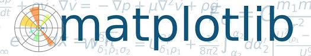
- Matplotlib 就是 MATLAB+Plot+Library 的簡稱，因為是模仿 MATLAB 建立的繪圖庫，所以繪
圖風格會與 MATLAB 有點類似。12 - 為了提高處理大量資料的性能，Matplotlib 大量使用了 NumPy 和其相關的擴展代碼。 為了方便快速繪圖， Matplotlib 通過 pyplot 模組提供了一套和 MATLAB 類似的繪圖 API，只需要調用 pyplot 模組所提供的函數，就可以實現快速繪圖及設置圖表的各種細節。
- 另一方面 Matplotlib 也適合互動式繪製圖表，可以很方便地處理二維和三維的圖表。
seaborn
ggplot
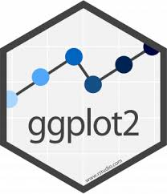
- R 語言視覺化神器的 Python 版本
- ggplot2 是一個十分強大的 R 語言可視化包。它的核心理念是將繪圖與數據分離，數據相關
的繪圖與數據無關的繪圖分離。15 - 它是按圖層作圖的，一個語句做一個僅包含基礎作圖單元的圖層，然後通過不同圖層的疊
加最後成圖。
plotly
- 這個神器是個 js 庫，不過也有各種流行的語言介面
- plotly 是一個能讓你畫出互動式圖表的一個開源套件,其基本操作是免費的,如果你想要使用網頁的版本,可以使用更多 plotly 的進階功能的話,就必須付費
1.4.5 機器學習
scikit-learn
- 幾乎所有機器學習演算法都囊括
- scikit-learn，又寫作 sklearn，是一個開源的基於 python 語言的機器學習工具包。它通
過 NumPy, SciPy 和 Matplotlib 等 python 數值計算的庫實現高效的算法應用，並且涵蓋了幾
乎所有主流機器學習算法。16 - sklearn 中常用的 module 有分類、回歸、聚類、降維、模型選擇、預處理。
NLTK
TensorFlow
- Tensorflow 最初為 Google Brian 所開發。在 2015 時，Google 將之開源，為現今重要的深
度學習框架之一，它支援各式不同的深度學習演算法，並已應用於各大企業服務上，Ex:
Google, Youtube, Airbnb, Paypal … 等。18 - 此外，Tensorflow 也支援在各式不同的
device 上運行深度學習 Ex: Tensorflow Lite 、 Tensorflow.js 等等。 - Tensorflow 為目
前最受歡迎的機器學習、深度學習開源專案。不管是 github fork 的數量、論文的使用次
數以及熱門程度，均比其他的框架來的多19。
深度學習套件
Keras

- 在 2015 年 TensorFlow 推出的同時，美國麻省理工學院（又是它，這學校開門就能賺錢）
也推出一套能很容易被使用者透過 Python 寫 Deep learning 的應用程式介面 API ，叫
做 Keras 。 - Keras 只有介面喔！ Keras 本身還是得透過 TensorFlow ，或者其
他像是微軟的 CNTK 這類引擎當作底層，才能執行。20 - Keras 使用上比較接近人類的想法（ TensorFlow 設計上沒有錯，只不過比較是針對電腦
系統跟網路通訊的想法），所以透過 Python 呼叫 Keras 能夠很簡單地描述我們人類想
要電腦達到 Deep Learning 要做的事情。目前在教學上， Keras 的普及率相當高 - Keras 可以快速有方便運算的主要原因是，它已經將訓練模型的輸入層、隱藏層、輸出層，做好架構，使用者只需要加入並且填寫正確的參數 ex.神經元個數、activation function 的函式…等。21
PyTorch
- Numpy 的 GPU 版
- PyTorch 為 Facebook 在 2017 年初開源的深度學習框架，其建立在 Torch 之上，且標
榜 Python First ，為量身替 Python 語言所打造，使用起來就跟寫一般 Python 專案沒
兩樣，也能和其他 Python 套件無痛整合。PyTorch 的優勢在於其概念相當直觀且語法簡
潔優雅，因此視為新手入門的一個好選項；再來其輕量架構讓模型得以快速訓練且有效運
用資源。22 - 於 PyTorch 框架中，資料類型定義為張量(Tensor)，張量可以是純量、向量或是更高維度的矩陣，而 torch 函式庫負責張量在 CPU/GPU 的運算。
1.5 python 執行環境建立與維護
建立23
conda create -n envName
啟用
conda activate envName
退出
conda deactiveate
刪除
conda env remove -n envName
列出目前系統中所有的虛擬環境
conda env list
1.6 將執行環境匯入 jupyter
- 於終端機(for windows: Anaconda prompt)下建立、啟用所需虛擬環境
- 將環境滙至 jupyter kernel
python -m ipykernel install --user --name 虛擬環境名稱 --display-name "在jupyter中的名稱"
- 啟動 jupyter
2 Numpy
2.1 關於 Numpy
- Numpy 是 Python 的一個重要模組，主要用於資料處理上。Numpy 底層以 C 和 Fortran 語言實作，所以能快速操作多重維度的陣列。24
- 當 Python 處理龐大資料時，其原生 list 效能表現並不理想（但可以動態存異質資料），而 Numpy 具備平行處理的能力，可以將操作動作一次套用在大型陣列上。
- Python 多數重量級的資料科學相關套件（例如：Pandas、SciPy、Scikit-learn 等）都幾乎是奠基在 Numpy 的基礎上。因此學會 Numpy 對於往後學習其他資料科學相關套件打好堅實的基礎。
- 延伸閱讀: 為什麼要用 Numpy？
2.2 匯入模組
使用模組裡的函式要加模組名稱
import numpy匯入 numpy 模組並使用 np 作為簡寫，這是 Numpy 官方倡導的寫法
import numpy as np
- Numpy 中的多維資料型別稱為 ndarray
2.3 Create ndarray
- Numpy 的重點在於陣列的操作，其所有功能特色都建築在同質且多重維度的 ndarray（N-dimensional array）上。
- ndarray 的關鍵屬性是維度（ndim）、形狀（shape）和數值類型（dtype）。 一般我們稱一維陣列為 vector 而二維陣列為 matrix24。
2.3.1 一維陣列
list 或 tuple 轉入
1: import numpy as np 2: np1 = np.array( [1, 2, 3, 4] ) 3: print(np1)
[1 2 3 4]
使用 np.arange( ) 方法
1: import numpy as np 2: 3: np2 = np.arange(5) 4: print("=====np2=====") 5: print(np2) 6: np3 = np.arange(1, 4, 0.5) 7: print("=====np3=====") 8: print(np3)
=====np2===== [0 1 2 3 4] =====np3===== [1. 1.5 2. 2.5 3. 3.5]
- np.arange() v.s. range()
差異：
- range()為 python 內建函數
- range() return 的是 range object，而 np.nrange() return 的是 numpy.ndarray()
- range()不支援 step 為小數，np.arange()支援 step 為小數
- range()為 python 內建函數
2.3.2 二維陣列
1: import numpy as np 2: 3: np4 = np.array( [[1, 2, 4], [3, 4, 5]] ) 4: print("shape:", np4.shape) 5: print("np4:\n", np4) 6: print("取出第0列:",np4[0]) 7: print("取出第1行:",np4[:,1]) 8: np5 = np.array([np.arange(3), np.arange(3)]) 9: print('np5:\n', np5) 10: 11: np6 = np.arange(8).reshape(2, 4) 12: print('np6:\n', np6)
shape: (2, 3) np4: [[1 2 4] [3 4 5]] 取出第0列: [1 2 4] 取出第1行: [2 4] np5: [[0 1 2] [0 1 2]] np6: [[0 1 2 3] [4 5 6 7]]
2.3.3 多維陣列
1: import numpy as np 2: 3: np7 = np.arange(24).reshape(2, 3, 4) 4: print('np7:\n',np7) 5: 6: np8 = np.arange(13, 60, 2).reshape(2, 3, 4) 7: print("np8:\n", np8)
np7:
[[[ 0 1 2 3]
[ 4 5 6 7]
[ 8 9 10 11]]
[[12 13 14 15]
[16 17 18 19]
[20 21 22 23]]]
np8:
[[[13 15 17 19]
[21 23 25 27]
[29 31 33 35]]
[[37 39 41 43]
[45 47 49 51]
[53 55 57 59]]]
2.3.4 隨機矩陣
1: import numpy as np 2: 3: np8 = np.random.random((3, 2)) #矩陣大小以tuple表示 4: print('np8:\n', np8) 5: # 四個人擲骰子，每人擲兩次 6: np9 = np.random.randint(1, 7, size=[4, 2]) #矩陣大小以list表示 7: print('np9:\n', np9)
np8: [[0.7263954 0.71063088] [0.07725825 0.11562424] [0.57923875 0.85345365]] np9: [[5 6] [2 2] [5 5] [5 2]]
2.3.5 0/1 矩陣
- np.zeros: np.zeros( (陣列各維度大小用逗號區分) )：建立全為 0 的陣列，可以小括號定義陣列的各個維度的大小
1: import numpy as np 2: 3: zeros = np.zeros( (3, 5) ) 4: print("zeros=>\n{0}".format(zeros))
zeros=> [[0. 0. 0. 0. 0.] [0. 0. 0. 0. 0.] [0. 0. 0. 0. 0.]]
- np.ones: np.ones( (陣列各維度大小用逗號區分) )：用法與 np.zeros 一樣
1: import numpy as np 2: 3: ones = np.ones( (4, 3) ) 4: print("oness=>\n{0}".format(ones))
oness=> [[1. 1. 1.] [1. 1. 1.] [1. 1. 1.] [1. 1. 1.]]
2.3.6 練習
- 模擬一個37人/7科的全班月考成績
2.4 矩陣運算
2.4.1 索引(Indexing)、切片(Slicing)
索引(Indexing)的用途不外乎就是為了要從陣列和矩陣中取值，但除此之外有很多種功能！\
可以取出連續區間，還可以間隔取值！25
選取連續區間 [a:b]
1: import numpy as np 2: a = np.arange(10) ** 2 3: print("a=> {0}".format(a)) 4: print("a[2:5]=> {0}".format(a[2:5]))
a=> [ 0 1 4 9 16 25 36 49 64 81] a[2:5]=> [ 4 9 16]
- 間隔選取[::c]
以1維陣列來說明x[a:b:c]
- a：選取資料的起始索引
- b：選取資料的結束索引+1
- c：選取資料間隔，以索引值可以被此值整除的元素，不指定表示1
- a：選取資料的起始索引
1: import numpy as np 2: a = np.arange(10) ** 2 3: print("a==> {0}".format(a)) 4: a[2:9:3] = 999 5: print("a==> {0}".format(a))
a==> [ 0 1 4 9 16 25 36 49 64 81] a==> [ 0 1 999 9 16 999 36 49 999 81]
2.4.2 取出特定行列、特定範圍
- 取出第x列: Ary[x]
- 取出第x行: Ary[:,x]
- 取出第x1~x2列、第y1~y2行的範圍: Ary[x1:x2 + 1, y1:y2 + 1]
1: import numpy as np 2: a = np.arange(12).reshape(3, 4) 3: print(a) 4: print(a[1]) 5: print(a[:,1]) 6: print(a[1:3, 1:3])
[[ 0 1 2 3] [ 4 5 6 7] [ 8 9 10 11]] [4 5 6 7] [1 5 9] [[ 5 6] [ 9 10]]
2.4.3 刪除行/列
np.delete(temp,0,axis=1)#temp為操作物件，0表示要刪除的物件索引，axis表示行還是列，axis=0表示刪除行，axis=1表示刪除列。
1: import numpy as np 2: 3: a = np.arange(12).reshape(3, 4) 4: print(a) 5: a_delCol1 = np.delete(a, 1, 0) 6: print('刪除第1行') 7: print(a_delCol1) 8: a_delRow1 = np.delete(a, 1, 1) 9: print('刪除第1列') 10: print(a_delRow1) 11: print('現在的a') 12: print(a)
[[ 0 1 2 3] [ 4 5 6 7] [ 8 9 10 11]] 刪除第1行 [[ 0 1 2 3] [ 8 9 10 11]] 刪除第1列 [[ 0 2 3] [ 4 6 7] [ 8 10 11]] 現在的a [[ 0 1 2 3] [ 4 5 6 7] [ 8 9 10 11]]
2.4.4 迭代
- 一維陣列
1: import numpy as np 2: a = np.arange(4) ** 2 3: print("a: ",a) 4: for i in a: 5: print("a**(1/2)=> {0}".format(np.round(i**(1/2), 0)))
[0 1 4 9] a**(1/2)=> 0.0 a**(1/2)=> 1.0 a**(1/2)=> 2.0 a**(1/2)=> 3.0
多維陣列: 多維陣列在for loop中取值時，會以第一維度為優先！
1: import numpy as np 2: a = np.arange(1, 41).reshape(5, 8) 3: for row in a: 4: for i in row: 5: print("{0:3d}".format(i), end='') 6: print() 7:
1 2 3 4 5 6 7 8 9 10 11 12 13 14 15 16 17 18 19 20 21 22 23 24 25 26 27 28 29 30 31 32 33 34 35 36 37 38 39 40
2.4.5 基礎運算
- 維度相同的矩陣相加、減
1: import numpy as np 2: a = np.array( [6, 7, 8, 9] ) 3: b = np.arange( 4 ) 4: c = a - b 5: print("a=>{0}".format(a)) 6: print("b=>{0}".format(b)) 7: print("c=>{0}".format(c))
a=>[6 7 8 9] b=>[0 1 2 3] c=>[6 6 6 6]
- 矩陣與常數運算
1: import numpy as np 2: import math 3: a = np.random.randint(100, size=(2, 4)) #矩陣大小以tuple表示 4: 5: b = a + 10 6: c = a**2 7: print("a=>{0}".format(a)) 8: print("b=>{0}".format(b)) 9: print("c=>{0}".format(c))
a=>[[51 74 98 37] [13 13 74 86]] b=>[[ 61 84 108 47] [ 23 23 84 96]] c=>[[2601 5476 9604 1369] [ 169 169 5476 7396]]
2.4.6 矩陣轉置
\[a=\begin{bmatrix}1&0\\2&3\end{bmatrix}, a^T=\begin{bmatrix}1&2\\0&3\end{bmatrix}\]
1: import numpy as np 2: a = np.array([[1, 0], 3: [2, 3]]) 4: print(a) 5: print('--Matrix transpose--') 6: print(a.transpose())
[[1 0] [2 3]] --Matrix transpose-- [[1 2] [0 3]]
2.4.7 矩陣相乘
- 矩陣乘法
\[a=\begin{bmatrix}a_{11}&a_{12}\\a_{21}&a_{22}\end{bmatrix}, b=\begin{bmatrix}b_{11}&b_{12}&b_{13}\\b_{21}&b_{22}&b_{23}\end{bmatrix}\]
\[a \cdot b=\begin{bmatrix}a_{11}*b_{11}+a_{12}*b_{21}&a_{11}*b_{12}+a_{12}*b_{22}&a_{11}*b_{13}+a_{12}*b_{23}\\a_{21}*b_{11}+a_{22}*b_{21}&a_{21}*b_{12}+a_{22}*b_{22}&a_{21}*b_{13}+a_{22}*b_{23}\end{bmatrix}\]
1: import numpy as np 2: A = np.array([[1, 2, 3], [4, 3, 2]]) 3: B = np.array([[1, 2], [2, 0], [3, -1]]) 4: print("{0}".format(A.dot(B)))
[[14 -1] [16 6]]
- 相對位置乘法
\[a=\begin{bmatrix}a_{11}&a_{12}\\a_{21}&a_{22}\end{bmatrix}, b=\begin{bmatrix}b_{11}&b_{12}\\b_{21}&b_{22}\end{bmatrix}\]
\[a \cdot b=\begin{bmatrix}a_{11}*b_{11}&a_{12}*b_{12}\\a_{21}*b_{21}&a_{22}*b_{22}\end{bmatrix}\]
1: import numpy as np 2: A = np.array([[1, 2], [4, 5]]) 3: B = np.array([[7, 8], [9, 10]]) 4: print("A:\n{0}".format(A)) 5: print("B:\n{0}".format(B)) 6: print("A*B:\n{0}".format(A*B)) 7:
A: [[1 2] [4 5]] B: [[ 7 8] [ 9 10]] A*B: [[ 7 16] [36 50]]
- 取代矩陣中元素
1: import numpy as np 2: 3: C = np.array([5, -1, 3, 9, 0]) 4: print(C<=0) 5: # 將矩陣中小於等於0的元素取代為0;其他轉為1 6: C[C<=0] = 0 7: C[C>0] = 1 8: print(C)
[False True False False True] [1 0 1 1 0]
2.4.8 反矩陣
AB=BA=I, 其中 I 為單位矩陣
1: import numpy as np 2: 3: A = np.array([[4, -7], [2, -3]]) 4: print("A:\n", A) 5: B = np.linalg.inv(A) 6: print("B:\n", B) 7: print("A dot B:\n", A.dot(B))
A: [[ 4 -7] [ 2 -3]] B: [[-1.5 3.5] [-1. 2. ]] A dot B: [[1. 0.] [0. 1.]]
2.4.9 合併矩陣
vstack
1: import numpy as np 2: a = np.ones((2, 2)) 3: b = np.zeros(2) 4: print(a) 5: print(b) 6: c = np.vstack((a, b)) 7: print(c)
[[1. 1.] [1. 1.]] [0. 0.] [[1. 1.] [1. 1.] [0. 0.]]
hstack
1: import numpy as np 2: a = np.ones((2, 2)) 3: b = [[3], 4: [4]] 5: print(a) 6: print(b) 7: c = np.hstack((a, b)) 8: print(c) 9:
[[1. 1.] [1. 1.]] [[3], [4]] [[1. 1. 3.] [1. 1. 4.]]
2.5 矩陣函數
2.5.1 官網
2.5.2 numpy.sum()
語法
numpy.sum(a, axis=None, dtype=None, out=None, keepdims=<no value>, initial=<no value>, where=<no value>)
範例
1: import numpy as np 2: 3: np_array_2x3 = np.array([[0,2,4],[1,3,5]]) 4: print('=====Array=====') 5: print(np_array_2x3) 6: print('=====列=====') 7: print(np.sum(np_array_2x3, axis = 0)) 8: print('=====行=====') 9: print(np.sum(np_array_2x3, axis = 1)) 10: print('=====陣列總和1=====') 11: print(np.sum(np_array_2x3)) 12: print('=====陣列總和2=====') 13: print(np_array_2x3.sum()) 14:
=====Array===== [[0 2 4] [1 3 5]] =====列===== [1 5 9] =====行===== [6 9] =====陣列===== 15 =====陣列===== 15
2.5.3 numpy.max()
語法
1: numpy.max(a, axis=None, out=None, keepdims=False)
- 求序列的最值
- 最少接收一個引數
- axis：預設為列向（也即 axis=0），axis = 1 時為行方向的最值；
範例
1: import numpy as np 2: 3: np_array_2x3 = np.array([[9,2,8],[4,7,5]]) 4: print('=====Array=====') 5: print(np_array_2x3) 6: print('=====列=====') 7: print(np.max(np_array_2x3, axis = 0)) 8: print('=====行=====') 9: print(np.max(np_array_2x3, axis = 1)) 10: print('=====陣列=====') 11: print(np.max(np_array_2x3))
=====Array===== [[9 2 8] [4 7 5]] =====列===== [9 7 8] =====行===== [9 7] =====陣列===== 9
2.5.4 numpy.maxium()
語法
1: numpy.maximum：(X, Y, out=None)
- X 與 Y 逐位比較取其大者；
- 最少接收兩個引數
範例
1: import numpy as np 2: npA1 = np.array([[9,-9,8],[4,7,5]]) 3: npA2 = np.array([[0,1,8],[10,-7,5]]) 4: print("=====npA1=====") 5: print(npA1) 6: print("=====npA2=====") 7: print(npA2) 8: print("=====maximum=====") 9: print(np.maximum(npA1, npA2))
=====npA1===== [[ 9 -9 8] [ 4 7 5]] =====npA2===== [[ 0 1 8] [10 -7 5]] =====maximum===== [[ 9 1 8] [10 7 5]]
2.5.5 numpy.argmax()
語法
1: numpy.argmax(a, axis=None, out=None)[source]¶
- a: 可以轉換為陣列的陣列或物件，我們需要在其中找到最高值的索引。
- axis: 沿著行(axis=0)或列(axis=1)查詢最大值的索引。預設情況下，通過對陣列進行展平可以找到最大值的索引。
- out: np.argmax 方法結果的佔位符。它必須有適當的大小以容納結果。Returns the indices of the maximum values along an axis.
範例
- 一維陣列
1: import numpy as np 2: 3: a=np.array([2,6,1,6]) 4: 5: print("Array:") 6: print(a) 7: 8: req_index=np.argmax(a) 9: print("\nIndex with the largest value:") 10: print(req_index) 11: 12: print("\nThe largest value in the array:") 13: print(a[req_index])
Array: [2 6 1 6] Index with the largest value: 1 The largest value in the array: 6
- 二維陣列
1: import numpy as np 2: 3: a = np.array([[2,1,6], 4: [7,14,5]]) 5: 6: print("Array:") 7: print(a) 8: 9: req_index=np.argmax(a, axis=0) 10: print("\nIndex with the largest value(axis=0):") 11: print(req_index) 12: req_index=np.argmax(a, axis=1) 13: print("\nIndex with the largest value(axis=1):") 14: print(req_index) 15: req_index=np.argmax(a) 16: print("\nIndex with the largest value:") 17: print(req_index) 18:
Array: [[ 2 1 6] [ 7 14 5]] Index with the largest value(axis=0): [1 1 0] Index with the largest value(axis=1): [2 1] Index with the largest value: 4
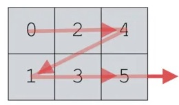
Figure 19: Sequence of Arg in array
2.5.6 about axis

Figure 20: Axis in ndarray
2.5.7 tile()
numpy.tile()是個什麼函數呢，說白了，就是把數組沿各個方向複製
1: import numpy as np 2: print('=====一維tile=====') 3: b = np.array([[1, 2], [3, 4]]) 4: b1 = np.tile(b, 2) 5: print(b1) 6: print('=====二維tile=====') 7: b2 = np.tile(b, (2, 3)) 8: print(b2)
=====一維tile===== [[1 2 1 2] [3 4 3 4]] =====二維tile===== [[1 2 1 2 1 2] [3 4 3 4 3 4] [1 2 1 2 1 2] [3 4 3 4 3 4]]
2.5.8 numpy.allclose
- Returns True if two arrays are element-wise equal within a tolerance.
- The tolerance values are positive, typically very small numbers. The relative difference (rtol * abs(b)) and the absolute difference atol are added together to compare against the absolute difference between a and b.
- NaNs are treated as equal if they are in the same place and if equalnan=True. Infs are treated as equal if they are in the same place and of the same sign in both arrays.
語法
1: numpy.allclose(a, b, rtol=1e-05, atol=1e-08, equal_nan=False)
Parameters
- a, b: arraylike. Input arrays to compare.
- rtol: float. The relative tolerance parameter (see Notes).
- atol: float. The absolute tolerance parameter (see Notes).
- equal_nan: bool. Whether to compare NaN’s as equal. If True, NaN’s in a will be considered equal to NaN’s in b in the output array.
Returns
- allclose: bool. Returns True if the two arrays are equal within the given tolerance; False otherwise.
DEMO
1: import numpy as np 2: import math 3: 4: print(math.pi) 5: x = np.array([[3.14159265, -0.1], [-0.1, 0.1]]) 6: y = np.array([[math.pi, -0.1], [-0.1, 0.1]]) 7: 8: z1 = np.array([[[3.14159265, -0.1], [-0.1, 0.1]], 9: [[3.14159265, -0.1], [-0.1, 0.1]]]) 10: z2 = np.array([[[math.pi, -0.1], [-0.1, 0.1]], 11: [[math.pi, -0.1], [-0.1, 0.1]]]) 12: 13: print(np.allclose(x,y)) 14: # Returns true, as expected 15: 16: print(np.allclose(x,z1)) 17: # Also returns true, even though matrices are different shapes. Unwanted. 18: 19: 20: a = np.array([[2,2,2], 21: [3,3,3]]) 22: b = np.array([[2,3,2], 23: [3,3,2]]) 24: print("=====allclose(atol=0.5)=====") 25: print(np.allclose(a, b, atol=0.5)) 26: print("=====allclose(atol=1.0)=====") 27: print(np.allclose(a, b, atol=1.0)) 28: print("=====equal()=====") 29: print(np.equal(a,b)) 30: 31: a = np.array([[2,2,2], 32: [3,3,3.1]]) 33: print(np.allclose(a, b, atol=1.0)) 34: print('=====isclose()=====') 35: print(np.isclose(a, b, atol=1.0))
3.141592653589793 True True =====allclose(atol=0.5)===== False =====allclose(atol=1.0)===== True =====equal()===== [[ True False True] [ True True False]] False =====isclose()===== [[ True True True] [ True True False]]
2.5.9 其他常用函數
- min()
- max()
- argmin
- mean()
- std()
- var()
- sqrt()
- size()
- dtype()
- itemsize()
1: import numpy as np 2: 3: np1 = np.random.randint(0, 10, size=[3, 2]) 4: print("np\n", np1) 5: print("np1.sum", np1.sum()) 6: print("sum:", sum(np1)) 7: print("sum:", sum(np1,3)) 8: print("min:", np1.min()) 9: print("max:", np1.max()) 10: print("mean:", np.mean(np1))
np [[0 0] [0 3] [0 3]] np1.sum 6 sum: [0 6] sum: [3 9] min: 0 max: 3 mean: 1.0
2.5.10 sum() v.s. np.sum()

Figure 21: sum() v.s. np.sum()
2.6 解聯立方程式
Numpy的linalg function可以用來解線性方程組，若目標方程式為\[Ax=b\]，其中\[x\]為所求之解，求解語法為：
1: import numpy as np 2: x = np.linalg.solve(A, b)
2.6.1 範例1
以如下方程式為例
\[\begin{cases}2x+y=5\\x+y=3\end{cases}\]
可將之視為求解\[Ax=b\]，其中
\[A=\begin{pmatrix}2&1\\1&1 \end{pmatrix}\], \[b=\begin{pmatrix} 5\\3 \end{pmatrix} \]
solution
1: import numpy as np 2: A = np.array([[2, 1], 3: [1, 1]]) 4: b = np.array([5, 3]) 5: x = np.linalg.solve(A, b) 6: print(x) 7: print(np.allclose(np.dot(A, x), b)) ##評估兩個向量是否接近(relative tolerance:1e-05, absolute tolerance: 1e-08) 8: print(np.dot(A, x)) ##驗證正確性
[2. 1.] True [5. 3.]
2.6.2 範例2
求解下列方程式
\[\begin{cases}3x_0+2x_1+x_2=11\\2x_0+3x_1+x_2=13\\x_0+x_1+4x_2=12 \end{cases}\], 以\[Ax=b\]表示，則
\[A=\begin{pmatrix}3&2&1\\2&3&1\\1&1&4\end{pmatrix}, x=\begin{pmatrix}x_0\\x_1\\x_2\end{pmatrix}, b=\begin{pmatrix}11\\13\\12\end{pmatrix}\]
solution
1: import numpy as np 2: A = np.array([[3, 2, 1], 3: [2, 3, 1], 4: [1, 1, 4]]) 5: b = np.array([11, 13, 12]) 6: x = np.linalg.solve(A, b) 7: print(x) 8: print(np.allclose(np.dot(A, x), b)) 9: print(np.dot(A, x))
[1. 3. 2.] True [11. 13. 12.]
2.7 讀取外部檔案
2.7.1 Bineary Format
save(), load()
1: import numpy as np 2: a = np.arange(0, 12).reshape(3,4) 3: print(a) 4: np.save('a', a) 5: # 讀入 6: b = np.load('a.npy') 7: print(b)
[[ 0 1 2 3] [ 4 5 6 7] [ 8 9 10 11]] [[ 0 1 2 3] [ 4 5 6 7] [ 8 9 10 11]]
savez()
我們可以儲存多個陣列在一個zip的檔案中，使用np.savez就可以了！
1: import numpy as np 2: aAry = [1,2,3,4,5,6] 3: bAry = [7,8,9,10,11,12] 4: #save 5: np.savez('ab.npz', a = aAry, b = bAry) 6: #load 7: myZip = np.load('ab.npz') 8: print(myZip['a']) 9: print(myZip['b'])
[1 2 3 4 5 6] [ 7 8 9 10 11 12]
2.7.2 Text Files: csv
目標文字檔(csv)如下：
1: cat cs-scores.csv
109.00,87,100.00,86.00,50.00 86.00,66,68.97,33.20,55.00 82.00,51,72.87,57.00,70.00 90.00,81,100.00,100.00,100.00 80.00,45,39.66,0.00,0.00 83.00,36,74.14,20.00,10.00 84.00,51,67.24,25.00,0.00 75.00,72,89.66,43.00,40.00 76.00,63,96.55,40.00,0.00 80.00,75,100.00,32.80,50.00 85.00,96,89.48,83.70,30.00
load
在Numpy內會使用.loadtxt或特定的np.genfromtxt來讀取文字檔
1: import numpy as np 2: myAry = np.loadtxt('cs-scores.csv', delimiter=',') 3: print(myAry)
[[109. 87. 100. 86. 50. ] [ 86. 66. 68.97 33.2 55. ] [ 82. 51. 72.87 57. 70. ] [ 90. 81. 100. 100. 100. ] [ 80. 45. 39.66 0. 0. ] [ 83. 36. 74.14 20. 10. ] [ 84. 51. 67.24 25. 0. ] [ 75. 72. 89.66 43. 40. ] [ 76. 63. 96.55 40. 0. ] [ 80. 75. 100. 32.8 50. ] [ 85. 96. 89.48 83.7 30. ]]
save
將處理完的陣列回存成csv檔：
1: import numpy as np 2: myAry = np.loadtxt('cs-scores.csv', delimiter=',') 3: print(myAry) 4: np.savetxt('cs-scores.csv', myAry) 5:
2.7.3 讀取混合格式的文字資料
如果資料中某些欄位的資料格式是字串 (string)，處理起來相當麻煩，改用 numpy.genfromtxt 會比較簡單。28
Importing data with genfromtxt
目標文字檔(csv)如下：
1: cat cs-scores2.csv
學號,平時成績,打字成績,作業成績,期中考,期末考 201811101,109.00,87,100.00,86.00,50.00 201811102,86.00,66,68.97,33.20,55.00 201811103,82.00,51,72.87,57.00,70.00 201811104,90.00,81,100.00,100.00,100.00 201811105,80.00,45,39.66,0.00,0.00 201811106,83.00,36,74.14,20.00,10.00 201811107,84.00,51,67.24,25.00,0.00 201811108,75.00,72,89.66,43.00,40.00 201811109,76.00,63,96.55,40.00,0.00 201811110,80.00,75,100.00,32.80,50.00 201811111,85.00,96,89.48,83.70,30.00
Pyton 3在讀取文字時，dtype應設為U(Unicode)，否則會在讀到的字首多出b29
1: import numpy as np 2: # Python3 is working with Unicode. 3: # I had the same issue when using loadtxt with dtype='S'. But using dtype='U as Unicode string in both numpy.loadtxt or numpy.genfromtxt, it will give output without b 4: data = np.genfromtxt("cs-scores2.csv", delimiter=',', 5: dtype=[('id', 'U10'), ('cls', float), 6: ('typing', float), ('hw', float), 7: ('mid', float), ('finl', float)], 8: skip_header=1, encoding='UTF-8') 9: print(data)
[('201811101', 109., 87., 100. , 86. , 50.)
('201811102', 86., 66., 68.97, 33.2, 55.)
('201811103', 82., 51., 72.87, 57. , 70.)
('201811104', 90., 81., 100. , 100. , 100.)
('201811105', 80., 45., 39.66, 0. , 0.)
('201811106', 83., 36., 74.14, 20. , 10.)
('201811107', 84., 51., 67.24, 25. , 0.)
('201811108', 75., 72., 89.66, 43. , 40.)
('201811109', 76., 63., 96.55, 40. , 0.)
('201811110', 80., 75., 100. , 32.8, 50.)
('201811111', 85., 96., 89.48, 83.7, 30.)]
2.7.4 讀取一個欄位資料
在 numpy.genfromtxt() 中, 使用 usecols 參數指定取出的欄位編號, 即可取出特定欄位
1: import numpy as np 2: 3: classScore = np.genfromtxt("cs-scores2.csv", delimiter=',', skip_header=1, 4: dtype=float, usecols=(2,), unpack=True, encoding='UTF-8') 5: print(classScore)
[87. 66. 51. 81. 45. 36. 51. 72. 63. 75. 96.]
2.8 基礎練習
資料來源: [轉]numpy 100道練習題
2.8.1 創建一個長度為10的零向量，並把第五個值賦值為1
example
[0. 0. 0. 0. 1. 0. 0. 0. 0. 0.]
2.8.2 創建一個5x5的矩陣，值域為1,3,5,7…,49
example
[[ 1 3 5 7 9] [11 13 15 17 19] [21 23 25 27 29] [31 33 35 37 39] [41 43 45 47 49]]
2.8.3 創建一個3x3x3的隨機數組
example
[[[0.65641795 0.9853537 0.64412663] [0.52595413 0.17452888 0.44484008] [0.69218998 0.37001109 0.94711544]] [[0.80803134 0.93661621 0.61489936] [0.19635856 0.98132637 0.36713757] [0.89105201 0.31710182 0.12375642]] [[0.42944896 0.24734458 0.97763098] [0.96900319 0.64789449 0.42795362] [0.72306476 0.07604109 0.13012237]]]
2.8.4 創建一個8x8的國際象棋棋盤矩陣（黑塊為0，白塊為1）
example
[[0 1 0 1 0 1 0 1] [1 0 1 0 1 0 1 0] [0 1 0 1 0 1 0 1] [1 0 1 0 1 0 1 0] [0 1 0 1 0 1 0 1] [1 0 1 0 1 0 1 0] [0 1 0 1 0 1 0 1] [1 0 1 0 1 0 1 0]]
2.8.5 對5x5的隨機矩陣進行歸一化(Normalization)
(提示: (x - min) / (max - min))
example
[[93.91707 7.2497428 80.03357931 67.36581629 11.58313519] [12.57003038 38.52508111 83.86899353 27.63880275 25.8237963 ] [18.68409281 64.40845991 41.08228881 62.87822465 52.23296308] [90.53354354 78.60844019 46.98888235 29.757448 38.46802081] [71.53666934 63.90804362 64.40403658 29.34575551 82.74560132]] [[1. 0. 0.8398071 0.69364172 0.0500003 ] [0.06138747 0.36086654 0.88406154 0.23525659 0.21431437] [0.1319338 0.65951863 0.39037256 0.64186221 0.5190332 ] [0.96095961 0.82336331 0.45852504 0.25970231 0.36020815] [0.74176658 0.65374464 0.65946759 0.25495205 0.87109942]]
2.8.6 如何找出兩個數組公共的元素?
(提示: np.intersect1d)
example
[3 4 2 8 0 3 5 4 7 9] [9 3 4 6 5 6 3 0 5 6] [0 3 4 5 9]
2.8.7 如何用一個生成10個整數的函數來構建數組
(提示: np.fromiter)
example
[0. 1. 2. 3. 4. 5. 6. 7. 8. 9.]
2.8.8 對一個小數組進行求和有沒有辦法比np.sum更快?
(提示: np.add.reduce)
example
45 45
2.8.9 如何判斷兩隨機數組相等
(提示: np.allclose, np.array_equal)
example
=====A===== [1 1 0 0 0] =====B===== [1 1 0 0 0] True True
2.8.10 創建一個大小為10的隨機向量並且將該向量中最大的值替換為0
(提示: argmax)
example
[0.509 0.491 0.888 0.604 0.409 0.136 0.523 0.068 0.307 0.869] [0.509 0.491 0. 0.604 0.409 0.136 0.523 0.068 0.307 0.869]
2.8.11 思考形狀為(100, 2)的隨機向量，求出點與點之間的距離
(提示: np.atleast_2d, T, np.sqrt)
example
[[0.24 0.44] [0.87 0.84] [0.87 0.63] [0.56 0.11] [0.67 0.47]] [[0. 0.74 0.66 0.46 0.43] [0.74 0. 0.21 0.79 0.42] [0.66 0.21 0. 0.61 0.26] [0.46 0.79 0.61 0. 0.37] [0.43 0.42 0.26 0.37 0. ]] [[0. 0.45 0.29 0.77 0.78] [0.45 0. 0.68 1.04 0.76] [0.29 0.68 0. 0.93 1.05] [0.77 1.04 0.93 0. 0.58] [0.78 0.76 1.05 0.58 0. ]]
2.8.12 如何在二維數組的隨機位置放置p個元素?(提示: np.put, np.random.choice)
example
[[0. 0. 0. 0. 1.] [0. 0. 1. 0. 0.] [0. 0. 1. 0. 0.] [0. 0. 0. 0. 0.] [0. 0. 0. 0. 0.]]
2.8.13 如何對數組通過第n列進行排序? (提示: argsort)
example
[[6 1 5] [8 7 9] [9 5 1]] [[9 5 1] [6 1 5] [8 7 9]]
2.8.14 從數組中找出與給定值最接近的值(提示: np.abs, argmin, flat)
example
[0.10888426 0.00635016 0.80979507 0.99058779 0.37085609 0.0438693 0.33289479 0.02195115 0.74203634 0.48734223] =====最接近 0.5 的陣列值及其位置===== (array([9]),) : 0.487342230530487
2.8.15 創建一個具有name屬性的數組類(提示: class method)
example
range_10
2.8.16 考慮一個維度(5,5,3)的數組，如何將其與一個(5,5)的數組相乘？(提示: array[:, :, None])
example
[[[2. 2. 2.] [2. 2. 2.] [2. 2. 2.] [2. 2. 2.] [2. 2. 2.]] [[2. 2. 2.] [2. 2. 2.] [2. 2. 2.] [2. 2. 2.] [2. 2. 2.]] [[2. 2. 2.] [2. 2. 2.] [2. 2. 2.] [2. 2. 2.] [2. 2. 2.]] [[2. 2. 2.] [2. 2. 2.] [2. 2. 2.] [2. 2. 2.] [2. 2. 2.]] [[2. 2. 2.] [2. 2. 2.] [2. 2. 2.] [2. 2. 2.] [2. 2. 2.]]]
2.8.17 如何對一個數組中任意兩行做交換?(提示: array[[]] = array[[]])
example
[[ 0 1 2 3 4] [ 5 6 7 8 9] [10 11 12 13 14] [15 16 17 18 19] [20 21 22 23 24]] [[ 5 6 7 8 9] [ 0 1 2 3 4] [10 11 12 13 14] [15 16 17 18 19] [20 21 22 23 24]]
2.8.18 思考描述10個三角形（共享頂點）的一組10個三元組，找到組成所有三角形的唯一線段集(提示: repeat, np.roll, np.sort, view, np.unique)
example
[( 1, 31) ( 1, 77) ( 2, 23) ( 2, 33) ( 8, 43) ( 8, 88) ( 9, 55) ( 9, 93) (17, 61) (17, 65) (17, 70) (17, 74) (21, 38) (21, 67) (23, 33) (31, 77) (36, 58) (36, 63) (38, 67) (43, 88) (52, 65) (52, 92) (55, 93) (58, 63) (61, 70) (65, 74) (65, 92) (90, 91) (90, 98) (91, 98)]
2.8.19 如何找出數組中出現頻率最高的值?(提示: np.bincount, argmax)
2.8.20 從一個5x5的矩陣中提取出連續的3x3區塊**(提示: stride_tricks.asstrided)
example
[[2 5 1 4 6] [2 6 7 2 4] [3 7 7 4 6] [8 1 4 0 3] [1 1 7 7 4]] [[[[2 5 1] [2 6 7] [3 7 7]] [[5 1 4] [6 7 2] [7 7 4]] [[1 4 6] [7 2 4] [7 4 6]]] [[[2 6 7] [3 7 7] [8 1 4]] [[6 7 2] [7 7 4] [1 4 0]] [[7 2 4] [7 4 6] [4 0 3]]] [[[3 7 7] [8 1 4] [1 1 7]] [[7 7 4] [1 4 0] [1 7 7]] [[7 4 6] [4 0 3] [7 7 4]]]]
2.8.21 對於一個16x16的數組，如何得到一個區域的和(區域大小為4x4)? (提示: np.add.reduceat)
2.8.22 如何找到一個數組的第n個最大值?(提示: np.argsort | np.argpartition)
2.9 作業
2.9.1 作業1
- 隨機產生一組 150 個 0~100 的陣列。
- 將上述陣列 reshape 為 30*5 的二維陣列，模擬成一個班級的某次考試成績(30 人*5 科)。
- 輸出此次 5 科考科的全班總分、平均。某班資電腦科期中考成績(30 人，分數為 0~100)，將分數以「開根
號乘以 10」的方式修正，求全班最高分、最低分、平均。 - 輸出各科標準差(提示：std)
- 將全班分數以「開根號乘以 10」的方式進行調整。
- 上述輸出至小數點第二位(提示：set_printoptions)
結果範例
各科總分: [1427 1338 1417 1380 1678] 各科平均: [47.57 44.6 47.23 46. 55.93] 各科最高分: [97 95 98 96 99] 各科最低分: [2 0 0 6 0] 各科標準差: [31.56 30.23 31.07 30.47 32.93] 調整分數: [[96.95 68.56 24.49 36.06 81.24] [75.5 20. 55.68 97.98 92.74] [20. 70. 60. 94.34 91.65] [41.23 56.57 91.1 55.68 97.47] [98.49 43.59 0. 36.06 71.41] [52.92 41.23 95.92 83.07 53.85] [97.98 94.34 52.92 50. 93.81] [47.96 74.83 54.77 50. 22.36] [81.85 63.25 90. 68.56 97.47] [67.82 66.33 82.46 86.02 91.65] [81.85 75.5 46.9 66.33 40. ] [45.83 80.62 56.57 30. 87.18] [50.99 97.47 98.99 93.81 99.5 ] [98.49 95.39 88.88 24.49 91.65] [60. 73.48 90.55 24.49 74.16] [50. 93.27 89.44 91.65 99.5 ] [77.46 28.28 34.64 24.49 28.28] [91.65 46.9 72.11 97.98 57.45] [60.83 87.75 68.56 75.5 61.64] [93.81 24.49 84.85 36.06 96.95] [69.28 55.68 83.67 36.06 95.39] [96.44 86.6 17.32 76.16 60. ] [77.46 83.67 37.42 96.95 0. ] [31.62 14.14 76.16 67.08 61.64] [64.81 30. 36.06 84.26 87.75] [40. 26.46 97.98 40. 10. ] [31.62 95.92 85.44 82.46 76.16] [14.14 0. 58.31 54.77 74.83] [85.44 67.08 33.17 68.56 44.72] [17.32 69.28 37.42 68.56 40. ]]
2.9.2 作業2
Nearest neighbor: Find nearest neighbors according to )of a numpy array in list of numpy arrays
結果範例
[[21 89 59 80] [94 48 85 34] [39 10 79 31] [88 76 94 37]] 最接近50的值在Array[1][1]: 48
example
[[21 89 59 80] [94 48 85 34] [39 10 79 31] [88 76 94 37]] 最接近50的值在Array[1][1]: 48
2.10 資料的正規化(Normalization)及標準化(Standardization)
當我們在比較分析兩組數據資料時，可能會遭遇因單位的不同(例如：身高與體重)，或數字大小的代表性不同(例如：粉專1萬人與滿足感0.8)，造成各自變化的程度不一，進而影響統計分析的結果；為解決此類的問題，我們可利用資料的正規化(Normalization)與標準化(Standardization)，藉由將原始資料轉換成無量綱(Dimensionless)的純量後，來進行數據的比較及分析。30
2.10.1 Normalization
原始資料的數據按比例縮放於 [0, 1] 區間中，且不改變其原本分佈。舉例來說，若我們現有兩組數據資料，分別表示 500 項商品的銷售量 Sample 1 及銷售額 Sample 2，如下圖所示，很明顯地，此兩組資料的單位不同，且數字上有著懸殊的差異，分別透過資料正規化後，兩組資料將同時轉換成純量縮放於 [0,1] 區間中，如下右圖所示；這樣的資料轉換，能排除資料單位的限制，提供我們一個相同的基準來進行後續比較分析。
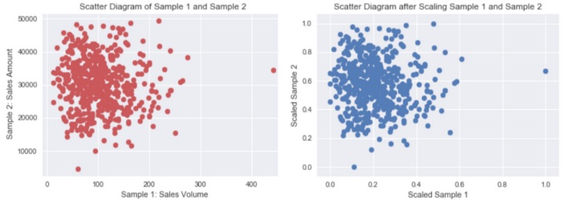
Figure 22: Normalization
實作
最小值最大值正規化的用意，是將資料等比例縮放到 [0, 1] 區間中，可利用下列公式進行轉換：
\[X_{nom} = \frac{X-X_{min}}{X_{max}-X{min}} \in [0,1]\]
其中 Xmax 與 Xmin 分別為資料中的最小值與最大值。此種方法有一點需我們特別注意，即若原始資料有新的數據加入，有可能導致最小值 Xmin 及最大值 Xmax 的改變，則這時候我們需再重新定義公式中的 Xmin 及 Xmax。另外，若將轉換公式修改成下列：
\[X_{nom} = \frac{X-\mu}{X_{max}-X{min}} \in [-1,1]\]
其中\[\mu\]為資料的平均值，則資料將縮放到 [-1, 1] 區間中且平均值 = 0，我們稱這為平均值正規化(Mean Normalization)。
在實務操作最小值最大值正規化時，我們可使用 Scikit-learn 套件的MinMaxScaler 物件執行。
2.10.2 Standardization
會將所有特徵數據縮放成平均為0、平方差為1。資料的標準化(Standardization)可運用在機器學習演算法中，它能帶給模型下面兩個好處：
- 提升模型的收斂速度
在建構機器學習模型時，我們會利用梯度下降法(Gradient Descent)來計算成本函數(Cost Function)的最佳解；假設我們現有兩個特徵值 x1 in [0,1] 與 x2 in [0,10000]，則在 x1-x2 平面上成本函數的等高線會呈窄長型，導致需較多的迭代步驟，另外也可能導致無法收斂的情況發生。因此，若將資料標準化，則能減少梯度下降法的收斂時間。 - 提高模型的精準度
將特徵值 x1 及 x2 餵入一些需計算樣本彼此的距離(例如:歐氏距離)分類器演算法中，則 x2 的影響很可能將遠大於 x1，若實際上 x1 的指標意義及重要性高於 x2，這將導致我們分析的結果失真。因此，資料的標準化是有必要的，可讓每個特徵值對結果做出相近程度的貢獻。
實作
\[Z = \frac{X-\mu}{\delta} \sim N(0, 1)\]
經 Z分數標準化後，資料將符合標準常態分佈(Standard Normal Distribution)，轉換後的平均值=0、標準差=1，且用標準分數或稱 Z分數(Z-Score)來作為單位。Z分數標準化適用於分佈大致對稱的資料，因為在非常不對稱的分佈中，標準差的意義並不明確，此時若標準化資料，可能會對結果做出錯誤的解讀，另外，當我們未知資料的最大值與最小值，或存在超出觀察範圍的離群值時，可透過 Z分數標準化來降低離群值對整個模型的影響。
在實務操作時，我們可先分別計算資料的平均值及標準差，再代入上述公式完成標準化，另一種方法，我們可使用Scikit-learn 套件的preprocessing 模組來執行資料標準化。
3 Matplotlib
3.1 Matplotlib 簡介
- Matplotlib 是利用 Python 所實作的繪圖套件，其中包含兩個最重要的模組: pylab 和
pyplot。 - pylab 已經幾乎實作了在學術界最常用的套件 — Matlab 所支援的繪圖功能，或
者可以說 pylab 其實就是 Matlab 的 Python 版本； - pyplot 是把 pylab 再加上 Numpy，讓使用者在使用 pyplot 時，可以直
接呼叫 Numpy 的函式做計算後再以圖型的方式呈現。31 - 為 Python 最多人使用的 2D 繪圖工具
- 優點：圖形美觀、類型多、相容於 Matlab
- 官方社群網站 https://matplotlib.org/
- 維基百科 https://zh.wikipedia.org/wiki/Matplotlib
3.2 Matplotlib 基本語法
3.2.1 基本語法
- import matplotlib.pyplot as plt
- plt.plot()函式為 matplotlib.pyplot 模組畫線條方法，其語法如下
plt.plot( [x座標資料,] y座標資料 [, 參數1, 參數2, ...] )
3.2.2 範例:簡單的 sin 圖形
- np.sin( )函式為 Numpy 模組求正弦值
- plt.show( )函式用來顯示圖形
1: import matplotlib.pyplot as plt 2: import numpy as np 3: 4: x = np.arange(-3, 3, 0.1) 5: plt.clf() 6: plt.plot(x, np.sin(x)) 7: 8: # 若要存圖，要先存檔再顯示 # for jupyter 9: plt.savefig('images/SimpleSin.png', dpi=300) 10: # plt.show() # for jupyter 11: 12:
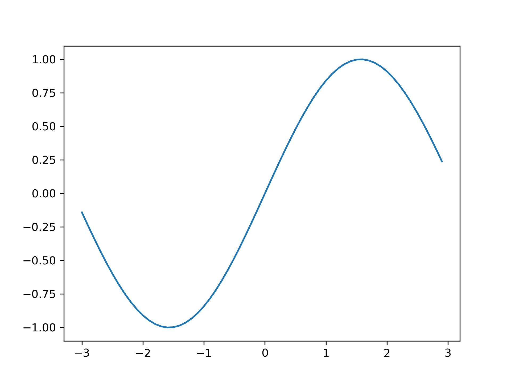
Figure 23: 簡單的 sin 圖形
3.2.3 plot 官方語法
plot()函式控制輸出主要有以下兩類參數：
- fmt 字串
- kwarg 參數
基本語法如下:
- plot([x], y, [fmt], *, data=None, **kwargs)
- plot([x], y, [fmt], [x2], y2, [fmt2], …, **kwargs)
3.3 fmt控制參數
- 可選引數 fmt 是定義基本格式 (如顏色、標記和 linestyle) 的簡便方法
- plot(): fmt 字串
| 字元 | 顏色 | 字元 | 標記 | 字元 | 標記 |
|---|---|---|---|---|---|
| ’b’ | 藍 | ’.’ | 點 | ’*’ | * |
| ’g’ | 綠 | ’o’ | 圓圈 | ’+’ | + |
| ’r’ | 紅 | ’v’ | 三角形(下) | ’x’ | x |
| ’c’ | 青 | ’^’ | 三角形(上) | ’d’ | 鑽石 |
| ’m’ | 洋紅 | ’<’ | 三角形(左) | 字元 | 線條 |
| ’y’ | 黃 | ’>’ | 三角形(右) | ’-’ | 實線 |
| ’k’ | 黑 | ’s’ | 正方形 | ’–’ | 虛線 |
| ’w’ | 白 | ’p’ | 五邊形 | ’-.’ | -.-.-.-. |
3.3.1 Demo #1
1: import matplotlib.pyplot as plt 2: import numpy as np 3: 4: x = np.arange(-3, 3, 0.1) 5: plt.clf() 6: plt.plot(x, np.sin(x), 'r+') 7: # for web-based 8: # plt.show() 9: 10: # saving figure 11: plt.savefig('SimpleSin2.png', dpi=300) 12:

Figure 24: 簡單的 sin 圖形
3.3.2 Demo #2
1: import matplotlib.pyplot as plt 2: import numpy as np 3: 4: x = np.arange(-3, 3, 0.1) 5: plt.clf() 6: plt.plot(x, np.cos(x), 'c-.') 7: # for web-based 8: # plt.show() 9: 10: # saving figure 11: plt.savefig('SimpleCos.png', dpi=300) 12:

Figure 25: 簡單的 cos圖形
3.3.3 Demo: 多組資料
1: import matplotlib.pyplot as plt 2: import numpy as np 3: 4: x1 = np.arange(-3, +3, 0.1) 5: y1 = np.sin(x1) 6: y2 = np.cos(x1) 7: 8: #plt.plot(x1, y1, 'r^--', x1, y2, 'go-') 9: plt.plot(x1, y1, 'r^--', x1, y2, 'go-') 10: plt.savefig('mline.png', dpi=300) 11:

Figure 26: 多組圖形
3.4 kwgarg 參數
3.4.1 kwarg 為 Line2D 屬性：color, linestyle, marker, label, linewidth, ….
- kwargs 用於指定諸如線條標籤 (用於自動圖例)、線寬、抗鋸齒、標記面顏色等屬性
- 若 fmt 和 kwarg 設定衝突時，以 kwarg 為主
3.4.2 color
- 單字，如 g：color = ’lime’
- 字母，如 g：color = ’k’
- 色碼，如 g：color = ’#FF0000’
- RGB 值(0~g1 之間)，如：color = (1, 0, 0)
| 字元 | 顏色 |
|---|---|
| ’b’ | 藍色 |
| ’g’ | 綠色 |
| ’r’ | 紅 |
| ’c’ | 青色 |
| ’m’ | 品紅 |
| ’y’ | 黃色 |
| ’k’ | 黑 |
| ’w’ | 白色 |
3.4.3 marker
| 字元 | 描述 |
|---|---|
| ’.’ | 點標記 |
| ’,’ | 畫素標記 |
| ’o’ | 圓圈標記 |
| ’v’ | triangle_down 標記 |
| ’^’ | triangle_up 標記 |
| ’<’ | triangle_left 標記 |
| ’>’ | triangle_right 標記 |
| ’1’ | tri_down 標記 |
| ’2’ | tri_up 標記 |
| ’3’ | tri_left 標記 |
| ’4’ | tri_right 標記 |
| ’s’ | 方形標記 |
| ’p’ | 五角大樓標記 |
| ’*’ | 星形標記 |
| ’h’ | hexagon1 標記 |
| ’H’ | hexagon2 標記 |
| ’+’ | 加號標記 |
| ’x’ | x 標記 |
| ’D’ | 鑽石標記 |
| ’d’ | thin_diamond 標記 |
| ’|’ | 圴標記 |
| ’_’ | 修身標記 |
linestyle
| 字元 | 描述 |
|---|---|
| ’-’ | 實線樣式 |
| ’–’ | 虛線樣式 |
| ’-.’ | 破折號-點線樣式 |
| ’:’ | 虛線樣式 |
label
- fg 呈現線條標籤，如 label = ’y = x2’
- 需搭配 pglt.legend()函式方能呈現 label
3.4.4 其他參數
- x / y 座標範圍：plt.xlim(起始值, 終止值) / plt.ylim(起, 止)
- 圖表標題：plt.title(字串)
- x / y 座標標題：plt.xlabel(字串) / plt.ylabel(字串)
- 顯示 kwarg 參數裡的 label：plt.legend()
3.4.5 kwarg 示範
1: import matplotlib.pyplot as plt 2: import numpy as np 3: 4: x = np.arange(-3, 3, 0.5) 5: plt.clf() 6: plt.plot(x, np.cos(x), color='c', linestyle='--', marker='p') 7: plt.xlim(-4, 4) 8: plt.xlabel('This is x label') 9: plt.title("This is Title", fontsize=16) 10: 11: plt.savefig('images/kwarg.png', dpi=300) 12:
Figure 27: kwarg參數控制
3.4.6 中文問題
- 解決方案
1: # 解決中文問題 2: plt.rcParams['font.sans-serif'] = ['SimHei'] # 步驟一（替換sans-serif字型） 3: plt.rcParams['axes.unicode_minus'] = False # 步驟二（解決座標軸負數的負號顯示問題）
- 實際示例
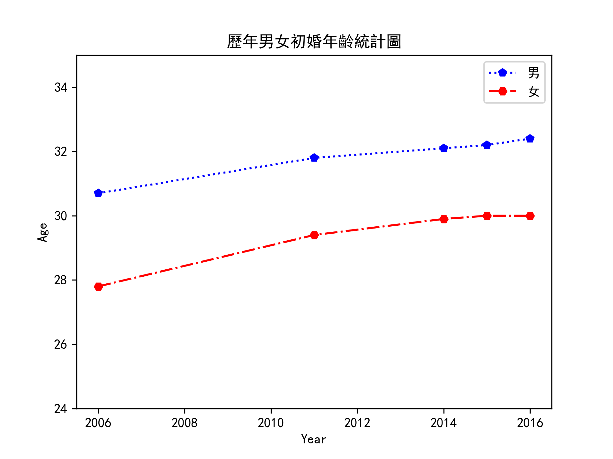
Figure 28: 簡單的折線圖及圖例
3.5 Line Chart
3.5.1 Demo #1
1: import matplotlib.pyplot as plt 2: import numpy as np 3: 4: x1 = [1, 2, 3, 4, 5, 6] 5: y1 = [1, 2, 3, 4, 5, 6] 6: x2 = np.arange(0, 3, 0.3) 7: x3 = np.arange(8).reshape(2, 4) 8: print(x3) 9: print(x3+3) 10: plt.plot(y1, 'c-p', x2, x2**2, 'ms:', x3, x3+3, '-*') 11: plt.savefig('line2.png', dpi=300)
[[0 1 2 3] [4 5 6 7]] [[ 3 4 5 6] [ 7 8 9 10]]

Figure 29: 簡單的折線圖形 2
3.5.2 練習1: 繪製折線圖
- 利用 list 繪製
- x1 = [1, 2, 3, 4, 5, 6]
- y1 = [1, 2, 3, 4, 5, 6]
- x1 = [1, 2, 3, 4, 5, 6]
- 執行 plt.plot(y1) 和 plt.plot(x1, y1) 有何差別??
- 利用 numpy 繪製
- x2 = np.arange(0, 3, 0.01)
- x2 = np.arange(0, 3, 0.01)
- 執行 plt.plot(x2, x2**2)看看畫出什麼圖形??
3.5.3 課堂作業: 圖表美化
- 將3.5.2的圖表加上標記、線條標籤，換線條顏色、線條樣式
請將下列資料繪成折線圖(男女折線不同顏色、樣式，加標記)
初婚年齡 2006 2011 2014 2015 2016 男 30.7 31.8 32.1 32.2 32.4 女 27.8 29.4 29.9 30.0 30.0 - 圖表標題: Age of first marriage
- 座標軸標題: x ⇒ Year、y ⇒ Age
- 線條標籤: 男 ⇒ Male、女 ⇒ Female
結果示例
- 圖表標題: Age of first marriage
3.6 Bar chart
- 語法
plt.bar( x座標資料, y座標資料 [, 參數1, 參數2, ...] ) plt.barh( x座標資料, y座標資料 [, 參數1, 參數2, ...] )
- DEMO
1: import matplotlib.pyplot as plt 2: import numpy as np 3: 4: objects = ('Python', 'C++', 'Java', 'Perl', 'Scala', 'Lisp') 5: y_pos = np.arange(len(objects)) 6: performance = [10,8,6,4,2,1] 7: 8: plt.barh(y_pos, performance, align='center', color = ['b','g','r','c','m','y'], alpha=0.5) 9: plt.yticks(y_pos, objects) 10: plt.xlabel('Usage') 11: plt.title('Programming language usage') 12: #plt.show() 13: plt.savefig('barChart.png', dpi=300) 14:
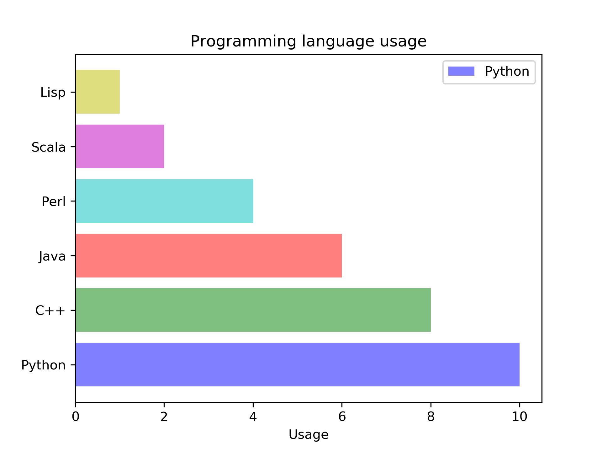
Figure 31: barChart Demo
3.7 Pie chart
3.7.1 語法：
plt.pie( 比例列表 [, 參數 1, 參數 2, …] )
3.7.2 參數：
- colors：各子圖顏色，多以 list 表示
- labels：各子圖標籤，多以 list 表示
- explode：各子圖分離突出比例，0.1 代表分離 10%，多以 list 表示
- autopct：顯示各子圖比例值，格式為%x.y%%
- startangle：繪製起始角度，預設為 0 (與三角函數角度相同)
- 若要以正圓形繪製，請再加上 plt.axis(’equal’)
- legend location
| Location String | Location Code |
|---|---|
| ’best’ | 0 |
| ’upper right’ | 1 |
| ’upper left’ | 2 |
| ’lower left’ | 3 |
| ’lower right’ | 4 |
| ’right’ | 5 |
| ’center left’ | 6 |
| ’center right’ | 7 |
| ’lower center’ | 8 |
| ’upper center’ | 9 |
| ’center’ | 10 |
3.7.3 範例
1: import matplotlib.pyplot as plt 2: import numpy as np 3: 4: parts = [35.35, 23, 26.65, 15] 5: labels = ['Harrison', 'Vanessa', 'James', 'Ruby'] 6: colors = ['red', 'lightblue', 'purple', 'yellow'] 7: explodes = [0.1, 0, 0, 0.1] 8: plt.pie(parts, colors = colors, labels = labels, explode = explodes, autopct = '%3.2f%%') 9: plt.axis('equal') 10: plt.legend(loc='upper left') 11: 12: #plt.show() 13: plt.savefig('simplePie.png', dpi=300)

Figure 32: 簡單的 pie chart
3.9 文字註解: plt.text()
3.9.1 語法
plt.text( x相對座標, y相對座標 , 文字字串 [, 其它參數] )- 參考資料
3.9.2 範例
1: import matplotlib.pyplot as plt 2: 3: x = [1, 2, 3, 4, 5, 6, 7, 8] 4: y = [1, 4, 9, 16, 25, 36, 49, 64] 5: plt.plot(x, y, 'r--') 6: for x, y in zip(x, y): 7: plt.text(x-0.2, y+0.6, '(%d, %d)' %(x, y)) 8: #plt.show() 9: plt.savefig('simpleText.png', dpi = 300)

Figure 33: 簡單的文字註解
3.10 子圖表: plt.subplot()
matplotlib下, 一個 Figure 對象可以包含多個子圖(Axes), 可以使用 subplot() 快速繪製, 其調用形式如下 :
3.10.1 subplot語法
subplot(numRows, numCols, plotNum)
- 圖表的整個繪圖區域被分成 numRows 行和 numCols 列
- 然後按照從左到右，從上到下的順序對每個子區域進行編號，左上的子區域的編號為1
- plotNum 參數指定創建的 Axes 對象所在的區域
- 如果 numRows, numCols 和 plotNum 這三個數都小於 10 的話, 可以把它們縮寫為一個整數, 例如 subplot(323) 和 subplot(3,2,3) 是相同的.
3.10.2 subplotsadjust語法
- subplotsadjust(left=None, bottom=None, right=None, top=None, wspace=None, hspace=None)
- left = 0.125 # 子圖(subplot)距畫板(figure)左邊的距離
- right = 0.9 # 右邊
- bottom = 0.1 # 底部
- top = 0.9 # 頂部
- wspace = 0.2 # 子圖水平間距
- hspace = 0.2 # 子圖垂直間距
3.10.3 範例32
1: import numpy as np 2: import matplotlib.pyplot as plt 3: 4: from matplotlib.ticker import NullFormatter # useful for `logit` scale 5: 6: # Fixing random state for reproducibility 7: np.random.seed(19680801) 8: 9: # make up some data in the interval ]0, 1[ 10: y = np.random.normal(loc=0.5, scale=0.4, size=1000) 11: y = y[(y > 0) & (y < 1)] 12: y.sort() 13: x = np.arange(len(y)) 14: 15: # plot with various axes scales 16: plt.figure() 17: 18: # linear 19: plt.subplot(221) 20: plt.plot(x, y) 21: plt.yscale('linear') 22: plt.title('linear') 23: plt.grid(True) 24: 25: 26: # log 27: plt.subplot(222) 28: plt.plot(x, y) 29: plt.yscale('log') 30: plt.title('log') 31: plt.grid(True) 32: 33: 34: # symmetric log 35: plt.subplot(223) 36: plt.plot(x, y - y.mean()) 37: plt.yscale('symlog', linthreshy=0.01) 38: plt.title('symlog') 39: plt.grid(True) 40: 41: # logit 42: plt.subplot(224) 43: plt.plot(x, y) 44: plt.yscale('logit') 45: plt.title('logit') 46: plt.grid(True) 47: # Format the minor tick labels of the y-axis into empty strings with 48: # `NullFormatter`, to avoid cumbering the axis with too many labels. 49: plt.gca().yaxis.set_minor_formatter(NullFormatter()) 50: 51: # Adjust the subplot layout, because the logit one may take more space 52: # than usual, due to y-tick labels like "1 - 10^{-3}" 53: plt.subplots_adjust(top=0.92, bottom=0.08, left=0.10, right=0.95, hspace=0.25, wspace=0.35) 54: 55: plt.savefig('simpleSubplot.png', dpi = 300)

Figure 34: 簡單的子圖表
3.11 實作練習
Line: 輸入 a, b, c，畫出曲線圖：y=$ax2+bx+c$，參考結果如下:
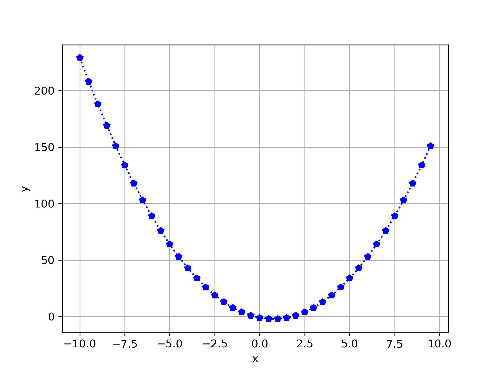
Figure 35: 方程式曲線圖
Bar: 將前一章的練習題所產生 30*5 的二維隨機陣列，將五科科目的平均製成長條圖，此五科科目設定為:國文、英文、數學、理化、史地。參考結果如下:
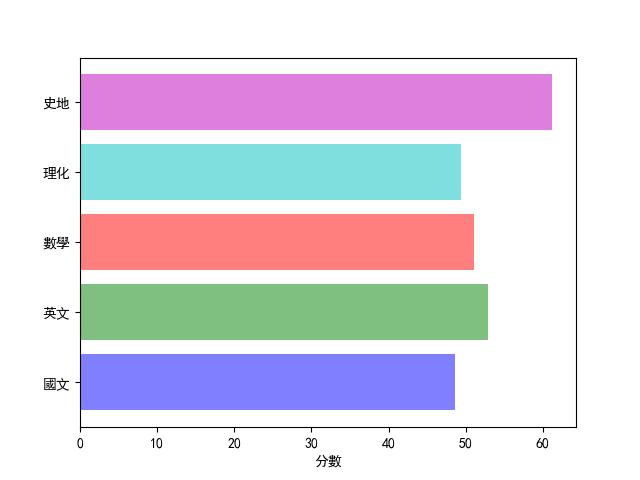
Figure 36: 分數長條圖
Scatter: 找出國文與英文兩科成績，畫出兩科成績的散佈圖(Scatter)，觀察學生在這兩科的得分是否有正相關。參考結果如下:
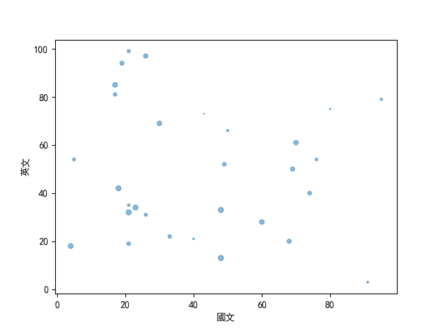
Figure 37: 兩科成績的關係圖
4 Pandas
4.1 Excel/CSV: Pandas 模組
4.1.1 CSV
- 為純文字檔，以逗號分隔值（Comma-Separated Values，CSV，有時也稱為字元分隔值，因為分隔字元也可以不是逗號）。
- 純文字意味著該檔案是一個字元序列，不含必須像二進位制數字那樣被解讀的資料。
- CSV 檔案由任意數目的記錄組成，記錄間以某種換行符分隔；每條記錄由欄位組成，欄位間的分隔符是其它字元或字串，最常見的是逗號。
4.1.2 Pandas
- Pandas 為建構於 NumPy 之上的套件，為 python 的一個數據分析模組，適合處理表格資料或
異質資料。 - 於 2009 年底開源出來，提供高效能、簡易使用的
資料格式(Data Frame，為 R 語言主要資料格式)，可以讓使用者可以快速操作及分析資料。 - Pandas 強化了資料處理的方便性也能與處理網頁資料與資料庫資料等，有點類似於
Office 的 Excel，能更加方便的進行運算、分析等33。 - Pandas 主要特色有34：
- 在異質數據的讀取、轉換和處理上，都讓分析人員更容易處理，例如：從列欄試算表中找到想要的值。
- Pandas 提供兩種主要的資料結構，Series 與 DataFrame。Series 顧名思義就是用來處理時間序列相關的資料(如感測器資料等)，主要為建立索引的一維陣列。DataFrame 則是用來處理結構化(Table like)的資料，有列索引與欄標籤的二維資料集，例如關聯式資料庫、CSV 等等。
- 透過載入至 Pandas 的資料結構物件後，可以透過結構化物件所提供的方法，來快速地進行資料的前處理，如資料補值，空值去除或取代等。
- 更多的輸入來源及輸出整合性，例如：可以從資料庫讀取資料進入 Dataframe，也可將處理完的資料存回資料庫。
- 在異質數據的讀取、轉換和處理上，都讓分析人員更容易處理，例如：從列欄試算表中找到想要的值。
4.2 Pandas 資料結構
4.3 Series
4.3.1 建立: 資料類型可為 array, dictionary
- 由 array 建立 Series
1: import pandas as pd 2: 3: cars = ["SAAB", "Audi", "BMW", "BENZ", "Toyota", "Nissan", "Lexus"] 4: print("資料型別:", type(cars)) 5: carsToSeries = pd.Series(cars) 6: print("資料型別:", type(carsToSeries)) 7: print(carsToSeries.shape) 8: print(carsToSeries) 9: print("carsToSeries[1]: ", carsToSeries[1])
資料型別: <class 'list'> 資料型別: <class 'pandas.core.series.Series'> (7,) 0 SAAB 1 Audi 2 BMW 3 BENZ 4 Toyota 5 Nissan 6 Lexus dtype: object Audi
4.3.2 資料篩選
- 選擇
1: import pandas as pd 2: 3: dict = { 4: "city": "Kaohsiung", 5: "speedCamera1": "13213", 6: "speedCamera2": "3242", 7: "speedCamera3": "134343", 8: "speedCamera4": "4312", 9: "speedCamera5": "533" 10: } 11: 12: dictToSeries = pd.Series(dict, index = dict.keys()) # 排序與原 dict 相同 13: print(dictToSeries[0]) 14: print("=====") 15: print(dictToSeries['speedCamera1']) 16: print("=====") 17: print(dictToSeries[[0, 2, 4]]) 18: print("=====") 19: print(dictToSeries[['city', 'speedCamera1', 'speedCamera3']]) 20: print("=====") 21: print(dictToSeries[:2]) 22: print("=====") 23: print(dictToSeries[4:])
Kaohsiung ===== 13213 ===== city Kaohsiung speedCamera2 3242 speedCamera4 4312 dtype: object ===== city Kaohsiung speedCamera1 13213 speedCamera3 134343 dtype: object ===== city Kaohsiung speedCamera1 13213 dtype: object ===== speedCamera4 4312 speedCamera5 533 dtype: object
4.4 DataFrame
4.4.1 DataFrame 建立
可利用 Dictionary 或是 Array 來建立，並使用 DataFrame 的方法來操作資料查看、資料篩選、資料切片、資料排序等運算。
4.4.2 由 Dictionary 建立
1: import pandas as pd 2: 3: hobby = ["Movies", "Sports", "Coding", "Fishing", "Dancing", "cooking"] 4: count = [46, 8, 12, 12, 6, 58] 5: 6: dict = {"hobby": hobby, 7: "count": count 8: } 9: print(dict) 10: df = pd.DataFrame(dict) 11: print(df)
{'hobby': ['Movies', 'Sports', 'Coding', 'Fishing', 'Dancing', 'cooking'], 'count': [46, 8, 12, 12, 6, 58]}
hobby count
0 Movies 46
1 Sports 8
2 Coding 12
3 Fishing 12
4 Dancing 6
5 cooking 58
4.4.3 由 Array 建立
1: import pandas as pd 2: 3: ary = [["Movies", 46],["Sports", 8], ["Coding", 12], ["Fishing",12], ["Dancing",6], ["cooking",8]] 4: print(ary) 5: ary2df = pd.DataFrame(ary, columns = ["hobby", "count"]) # 指定欄標籤名稱 6: print(ary2df) 7:
[['Movies', 46], ['Sports', 8], ['Coding', 12], ['Fishing', 12], ['Dancing', 6], ['cooking', 8]]
hobby count
0 Movies 46
1 Sports 8
2 Coding 12
3 Fishing 12
4 Dancing 6
5 cooking 8
4.4.4 讀入外部資料檔來建立 Dataframe
- 可以從異質資料來源讀取檔案(如 CSV 檔)內容，並將資料放入 DataFrame 中，進行資料查看、資料篩選、資料切片等運算。
- 如果資料檔和程式放在同一目錄(資料夾)
- 如果資料檔放在本機在其他地方
- 絕對路徑
- 相對路徑
- 絕對路徑
- 下載範例檔:scores.csv
1: import pandas as pd 2: 3: # 讀取csv 4: df = pd.read_csv("scores.csv") 5: print("===全部資料===") 6: print(df) 7: 8:
===全部資料===
id classparti typing homework midexam finalexam
0 201910901 100 72 92.11 48.0 16.0
1 201910902 96 56 93.42 60.0 40.0
2 201910903 96 76 102.63 45.0 28.0
3 201910904 93 64 86.84 44.0 25.0
4 201910905 93 56 42.11 0.0 20.0
.. ... ... ... ... ... ...
207 201911726 106 80 102.63 96.5 103.0
208 201911727 82 60 102.63 84.0 100.0
209 201911728 83 48 102.63 83.0 75.0
210 201911729 87 84 105.26 112.3 103.0
211 201911730 96 72 102.63 91.0 100.0
[212 rows x 6 columns]
4.5 DataFrame 的資料瀏覽
4.5.1 碁本函數
- shape
- describe()
- head()
- tail()
- columns
- index
- info()
1: import pandas as pd 2: 3: hobby = ["Movies", "Sports", "Coding", "Fishing", "Dancing", "cooking"] 4: count = [46, 8, 12, 12, 6, 58] 5: 6: dict = {"hobby": hobby, 7: "count": count 8: } 9: 10: df = pd.DataFrame(dict) 11: print(df) 12: print("====") 13: print(df.shape) # 回傳列數與欄數 14: print("---") 15: print(df.describe()) # 回傳描述性統計 16: print("---") 17: print(df.head(3)) # 回傳前三筆觀測值 18: print("---") 19: print(df.tail(3)) # 回傳後三筆觀測值 20: print("---") 21: print(df.columns) # 回傳欄位名稱 22: print("---") 23: print(df.index) # 回傳 index 24: print("---") 25: print(df.info) # 回傳資料內容
hobby count
0 Movies 46
1 Sports 8
2 Coding 12
3 Fishing 12
4 Dancing 6
5 cooking 58
====
(6, 2)
---
count
count 6.000000
mean 23.666667
std 22.393451
min 6.000000
25% 9.000000
50% 12.000000
75% 37.500000
max 58.000000
---
hobby count
0 Movies 46
1 Sports 8
2 Coding 12
---
hobby count
3 Fishing 12
4 Dancing 6
5 cooking 58
---
Index(['hobby', 'count'], dtype='object')
---
RangeIndex(start=0, stop=6, step=1)
---
<bound method DataFrame.info of hobby count
0 Movies 46
1 Sports 8
2 Coding 12
3 Fishing 12
4 Dancing 6
5 cooking 58>
4.5.2 DataFrame 資料排序
- sort_index(): The axis along which to sort. The value 0 identifies the rows, and 1 identifies the columns.
- sort_values()
- sort 後的結果為複本，不改變原本的資料
1: import pandas as pd 2: 3: hobby = ["Movies", "Sports", "Coding", "Fishing", "Dancing", "cooking"] 4: count = [46, 8, 12, 12, 6, 58] 5: 6: dict = {"hobby": hobby, 7: "count": count 8: } 9: 10: df = pd.DataFrame(dict) 11: print("===Original") 12: print(df) 13: print("===.sort_index()") 14: print(df.sort_index(axis = 1, ascending = True)) 15: print("===.sort_index()") 16: print(df.sort_index(axis = 0, ascending = False)) 17: print("===.sort_values()") 18: print(df.sort_values(by = 'count'))
===Original
hobby count
0 Movies 46
1 Sports 8
2 Coding 12
3 Fishing 12
4 Dancing 6
5 cooking 58
===.sort_index()
count hobby
0 46 Movies
1 8 Sports
2 12 Coding
3 12 Fishing
4 6 Dancing
5 58 cooking
===.sort_index()
hobby count
5 cooking 58
4 Dancing 6
3 Fishing 12
2 Coding 12
1 Sports 8
0 Movies 46
===.sort_values()
hobby count
4 Dancing 6
1 Sports 8
2 Coding 12
3 Fishing 12
0 Movies 46
5 cooking 58
4.5.3 DataFrame 處理遺漏值
- dropna()
- fillna()
- isnull()
- notnull()
- 下載scores-null.csv
1: import pandas as pd 2: 3: df = pd.read_csv('scores-null.csv') 4: print(df) 5: # 刪除有遺失值的記錄 6: dropValue = df.dropna() 7: print(dropValue) 8: fill0 = df.fillna(0) 9: print(fill0) 10: fillv = df.fillna({"classparti":999, "typing":0, "finalExam":"NULL"}) 11: print(fillv)
id classparti typing homework finalExam
0 201910901 100.0 72.0 92.11 48.0
1 201910902 96.0 56.0 93.42 60.0
2 201910903 96.0 76.0 102.63 NaN
3 201910904 NaN 64.0 86.84 44.0
4 201910905 93.0 56.0 42.11 0.0
5 201910906 101.0 108.0 100.00 NaN
6 201910907 101.0 NaN 92.11 55.0
7 201910908 94.0 68.0 105.26 61.0
8 201910909 NaN 64.0 44.74 20.0
9 201910910 93.0 120.0 97.37 16.0
id classparti typing homework finalExam
0 201910901 100.0 72.0 92.11 48.0
1 201910902 96.0 56.0 93.42 60.0
4 201910905 93.0 56.0 42.11 0.0
7 201910908 94.0 68.0 105.26 61.0
9 201910910 93.0 120.0 97.37 16.0
id classparti typing homework finalExam
0 201910901 100.0 72.0 92.11 48.0
1 201910902 96.0 56.0 93.42 60.0
2 201910903 96.0 76.0 102.63 0.0
3 201910904 0.0 64.0 86.84 44.0
4 201910905 93.0 56.0 42.11 0.0
5 201910906 101.0 108.0 100.00 0.0
6 201910907 101.0 0.0 92.11 55.0
7 201910908 94.0 68.0 105.26 61.0
8 201910909 0.0 64.0 44.74 20.0
9 201910910 93.0 120.0 97.37 16.0
id classparti typing homework finalExam
0 201910901 100.0 72.0 92.11 48
1 201910902 96.0 56.0 93.42 60
2 201910903 96.0 76.0 102.63 NULL
3 201910904 999.0 64.0 86.84 44
4 201910905 93.0 56.0 42.11 0
5 201910906 101.0 108.0 100.00 NULL
6 201910907 101.0 0.0 92.11 55
7 201910908 94.0 68.0 105.26 61
8 201910909 999.0 64.0 44.74 20
9 201910910 93.0 120.0 97.37 16
4.6 Dataframe 的選取與過濾
4.6.1 資料選取: Select column(s) 35
df[['col1', 'col2']]df.col1
1: import pandas as pd 2: 3: df = pd.read_csv("scores.csv") 4: print(df.head(3)) 5: print(df[['id', 'typing']].head(3)) 6: print(df.id, df.homework)
id classparti typing homework midexam finalexam
0 201910901 100 72 92.11 48.0 16.0
1 201910902 96 56 93.42 60.0 40.0
2 201910903 96 76 102.63 45.0 28.0
id typing
0 201910901 72
1 201910902 56
2 201910903 76
0 201910901
1 201910902
2 201910903
3 201910904
4 201910905
...
207 201911726
208 201911727
209 201911728
210 201911729
211 201911730
Name: id, Length: 212, dtype: int64 0 92.11
1 93.42
2 102.63
3 86.84
4 42.11
...
207 102.63
208 102.63
209 102.63
210 105.26
211 102.63
Name: homework, Length: 212, dtype: float64
4.6.2 資料選取: Select using index (row)
df[1:20]
1: import pandas as pd 2: 3: df = pd.read_csv("scores.csv") 4: 5: print(df[1:3]) 6: print(df[df.homework<30]) 7: # 合併row and column 8: print(df.id[df.homework<30]) 9: print(df[['id', 'homework']][1:3])
id classparti typing homework midexam finalexam
1 201910902 96 56 93.42 60.0 40.0
2 201910903 96 76 102.63 45.0 28.0
id classparti typing homework midexam finalexam
10 201910911 62 44 20.39 4.0 0.0
18 201910919 14 56 25.92 0.0 0.0
23 201910924 75 48 10.75 0.0 0.0
124 201911315 71 120 15.35 0.0 0.0
140 201911331 93 120 25.88 0.0 16.0
10 201910911
18 201910919
23 201910924
124 201911315
140 201911331
Name: id, dtype: int64
id homework
1 201910902 93.42
2 201910903 102.63
4.6.3 條件式選取資料
語法
df[(condition)]df[(condition 1) & (condition 2) ]
範例
1: import pandas as pd 2: 3: df = pd.read_csv("scores.csv") 4: 5: print(df[(df.midexam >= 100) & (df.finalexam >= 100)])
id classparti typing homework midexam finalexam
11 201910912 87 92 92.11 110.8 103.75
70 201911034 104 92 102.63 100.8 101.00
88 201911115 120 88 105.26 113.5 111.00
98 201911125 119 80 107.89 113.2 115.00
102 201911129 106 52 102.63 103.6 100.00
127 201911318 108 80 102.63 104.8 100.00
138 201911329 105 48 107.89 100.0 100.00
143 201911334 100 120 81.58 104.8 113.00
153 201911608 88 0 102.63 100.0 100.00
169 201911624 82 100 102.63 101.5 105.00
182 201911701 103 108 92.63 100.0 100.00
189 201911708 106 108 102.63 107.2 101.00
190 201911709 108 88 107.89 104.8 105.00
191 201911710 102 100 102.63 100.0 105.00
193 201911712 105 96 101.58 107.5 100.00
195 201911714 102 44 107.89 110.0 110.00
196 201911715 106 120 107.89 102.4 105.00
198 201911717 80 120 107.89 106.0 100.00
201 201911721 109 76 100.00 100.0 100.00
203 201911722 105 120 102.63 101.5 105.00
210 201911729 87 84 105.26 112.3 103.00
4.7 Dataframe 進階條件過濾
4.7.1 loc, iloc, between 36
- loc: 基於行標籤和列標籤（x_label、y_label）進行索引，以 column 名做為 index
- iloc: 基於行索引和列索引（index，columns） 都是從 0 開始，以數字做為 index
- between: 檢查區間值,
Series.between(self, left, right, inclusive=True)
範例 1
1: import pandas as pd 2: 3: df = pd.read_csv("scores.csv") 4: print(df.head(3)) 5: print("========") 6: print(df.loc[df.homework<25, ['id', 'homework']]) 7: print("========") 8: print(df.loc[2,'homework'])
id classparti typing homework midexam finalexam
0 201910901 100 72 92.11 48.0 16.0
1 201910902 96 56 93.42 60.0 40.0
2 201910903 96 76 102.63 45.0 28.0
========
id homework
10 201910911 20.39
23 201910924 10.75
124 201911315 15.35
========
102.63
範例 2
1: # 載入函式庫 2: import pandas as pd 3: 4: print("Pandas version:", pd.__version__) 5: # 讀取csv 6: df = pd.read_csv("scores.csv") 7: # 輸出前3筆 8: print(df.iloc[:3]) 9: # 輸出前3筆的第2,3欄 10: print(df.iloc[:2, 1:3]) 11: 12: print(df['midexam'].between(50, 60)) 13: midFilter = df['midexam'].between(50, 55) 14: print(df[midFilter])
Pandas version: 0.25.1
id classparti typing homework midexam finalexam
0 201910901 100 72 92.11 48.0 16.0
1 201910902 96 56 93.42 60.0 40.0
2 201910903 96 76 102.63 45.0 28.0
classparti typing
0 100 72
1 96 56
102.63
0 False
1 True
2 False
3 False
4 False
...
207 False
208 False
209 False
210 False
211 False
Name: midexam, Length: 212, dtype: bool
id classparti typing homework midexam finalexam
6 201910907 101 120 92.11 55.0 20.0
65 201911029 93 60 82.00 50.0 16.0
72 201911036 88 80 102.63 53.0 76.0
92 201911119 82 104 89.47 50.0 20.0
94 201911121 95 100 88.51 52.0 72.0
109 201911136 91 100 81.58 51.0 4.0
171 201911626 98 72 97.37 50.0 75.0
4.8 進階分析
4.8.1 由其他 column 產生新的 column
- 全部指定
- 條件指定
4.8.2 資料分組: groupby
4.8.3 範例
1: # 載入函式庫 2: import pandas as pd 3: 4: # 讀取csv 5: df = pd.read_csv("scores.csv") 6: print(df.head(3)) 7: # 計算總分' 8: df['Final'] = df.classparti*.1 + df.typing*.1 + df.homework*.2 + df.midexam*.3 + df.finalexam*.3 9: 10: # PASS/FAIL 11: df.loc[df.Final < 60, 'PASS'] = False 12: df.loc[df.Final >= 60, 'PASS'] = True 13: 14: # create new column according to typing speed 15: df.loc[df.typing < 30, 'TypingSpeed' ] = 'LOW' 16: df.loc[df.typing.between(30, 60), 'TypingSpeed' ] = 'MID' 17: df.loc[df.typing > 60, 'TypingSpeed' ] = 'HIGH' 18: 19: print(df.head(3)) 20: 21: # 依打字速度分組 22: print(df.groupby('TypingSpeed')['Final'].mean()) 23: print(df.groupby('PASS')['typing' ,'homework'].mean()) 24:
id classparti typing homework midexam finalexam
0 201910901 100 72 92.11 48.0 16.0
1 201910902 96 56 93.42 60.0 40.0
2 201910903 96 76 102.63 45.0 28.0
id classparti typing ... Final PASS TypingSpeed
0 201910901 100 72 ... 54.822 False HIGH
1 201910902 96 56 ... 63.884 True MID
2 201910903 96 76 ... 59.626 False HIGH
[3 rows x 9 columns]
TypingSpeed
HIGH 69.977451
LOW 68.517333
MID 64.086303
Name: Final, dtype: float64
typing homework
PASS
False 77.567568 76.409054
True 84.525547 96.350730
4.8.4 資料檔下載: scores.csv
4.9 資料視覺化
4.9.1 Bar chart
1: # 載入函式庫 2: import pandas as pd 3: 4: # 讀取csv 5: df = pd.read_csv("scores.csv") 6: 7: # 計算總分' 8: df['Final'] = df.classparti*.1 + df.typing*.1 + df.homework*.2 + df.midexam*.3 + df.finalexam*.3 9: 10: # create new column according to typing speed 11: df.loc[df.typing < 30, 'TypingSpeed' ] = 'Level-1' 12: df.loc[df.typing.between(30, 60), 'TypingSpeed' ] = 'Level-2' 13: df.loc[df.typing > 60, 'TypingSpeed' ] = 'Level-3' 14: 15: x = df.groupby('TypingSpeed')['homework','classparti'].mean() 16: print(x) 17: 18: fig = df.groupby('TypingSpeed')['homework','classparti'].mean().plot(kind='bar', title="XXX", rot=0, legend=True) 19: fig.set_xlabel("Typing Speed") 20: fig.set_ylabel("score") 21: savefig = fig.get\under{}figure() 22: savefig.savefig('images/pandasPlot1.png', bbox_inches='tight')
homework classparti
TypingSpeed
Level-1 96.053333 87.666667
Level-2 85.273939 88.696970
Level-3 90.053920 93.159091
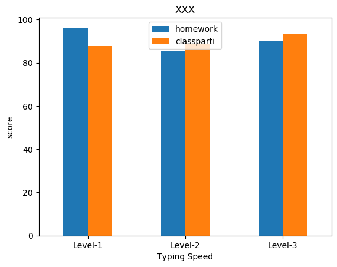
Figure 38: Pandas plot bar chart
4.9.2 Pie chart
DEMO
1: # 載入函式庫 2: import pandas as pd 3: 4: # 讀取csv 5: df = pd.read_csv("scores.csv") 6: 7: # 計算總分' 8: df['Final'] = df.classparti*.1 + df.typing*.1 + df.homework*.2 + df.midexam*.3 + df.finalexam*.3 9: 10: # create new column according to typing speed 11: df.loc[df.typing < 60, 'TypingSpeed' ] = 'Level-1' 12: df.loc[df.typing.between(60, 80), 'TypingSpeed' ] = 'Level-2' 13: df.loc[df.typing > 80, 'TypingSpeed' ] = 'Level-3' 14: print(df.groupby('TypingSpeed').count()) 15: 16: fig = df.groupby('TypingSpeed')['TypingSpeed'].count().plot(kind='pie', title="XXX", rot=0, legend=True) 17: savefig = fig.get\under{}figure() 18: savefig.savefig('images/pandasPlot2.png', bbox_inches='tight')
id classparti typing homework midexam finalexam Final
TypingSpeed
Level-1 25 25 25 25 25 25 25
Level-2 86 86 86 86 86 86 86
Level-3 101 101 101 101 100 101 100

Figure 39: Pandas plot pie chart
如何避免圖例擋住圖表
4.9.3 Scatter chart
1: # 載入函式庫 2: import pandas as pd 3: 4: # 讀取csv 5: df = pd.read_csv("scores.csv") 6: fig = df[['midexam','finalexam']].plot(kind='scatter', x=1, y=0) 7: 8: savefig = fig.get\under{}figure() 9: savefig.savefig('images/PandasPlot3.png')
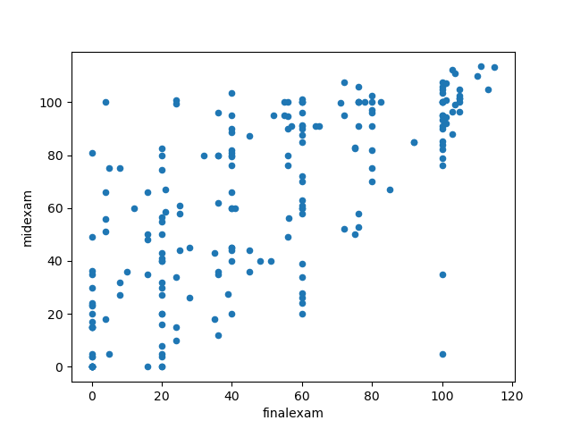
Figure 40: Pandas plot scatter chart
4.9.4 Haxbin chart
1: # 載入函式庫 2: import pandas as pd 3: 4: # 讀取csv 5: df = pd.read_csv("scores.csv") 6: fig = df[['midexam','finalexam']].plot(kind='hexbin', x=1, y=0, gridsize=25) 7: 8: savefig = fig.get\under{}figure() 9: savefig.savefig('images/PandasPlot6.png')
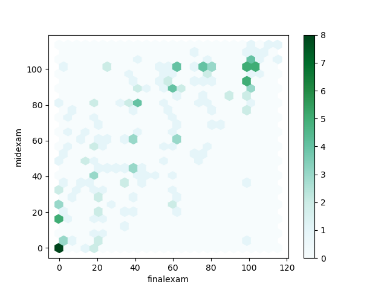
Figure 41: Pandas plot hexbin chart
4.9.5 Regression line chart
1: # 載入函式庫 2: import pandas as pd 3: import seaborn as sns 4: 5: # 讀取csv 6: df = pd.read_csv("scores.csv") 7: 8: fig = sns.regplot(x="midexam", y='finalexam', data=df); 9: 10: savefig = fig.get\under{}figure() 11: savefig.savefig('images/PandasPlot4.png') 12:
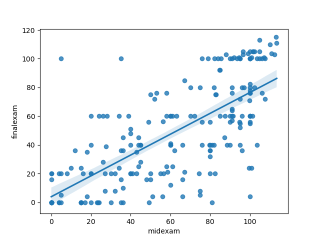
Figure 42: Pandas plot scatter chart
4.10 實作練習
4.10.1 403 期中考得分統計
- 原始數據
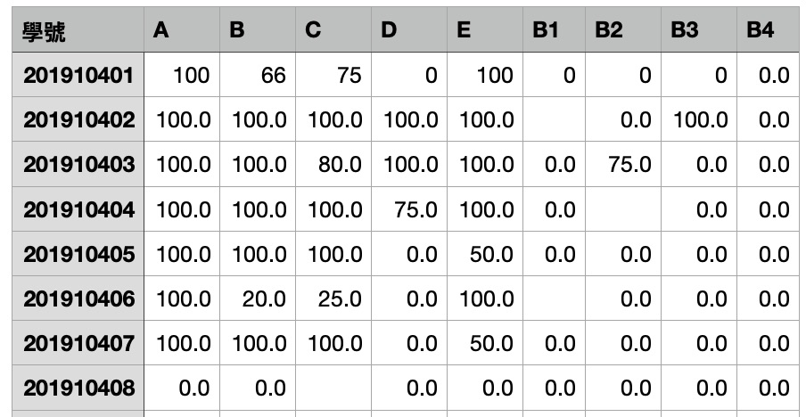
Figure 43: CSV 內容
- cs109score.csv為 T 市某校的資訊科線上期中考系統所匯出的成績檔，該次考試共計 10 題，
其中 A~F 為基本題，B1~B4 為加分題，前 5 題(A,B,C,D,E)為基本題，每題 100 分，後 4 題
為加分題(Bonus1~Bonus4)，每題 25 分，本份考卷總分：600；總得分除以 5 即為期中考得分，此次期中考總分 120 分。 - 任務 1: 將有缺失值的部份以 0 分取代。
- 任務 2: 求出每個人的原始總分(即所有分數)。
- 任務 3: 求出換算得分(即總得分除以 5)。
- 任務 4: 由學號欄提出班級資料， 新增一欄班級欄，班級為學號的第 5~7 碼，如 201910107，
表示該生為 101 班。 任務 5: 求出各題的平均得分，以直條長條圖顯示。如下圖:
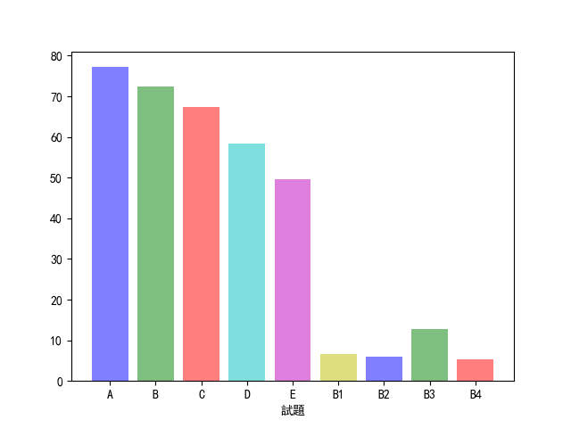
Figure 44: task5
任務 6: 以班級為分組依據，畫出各班平均得分，以橫向長條圖顯示。如下圖:
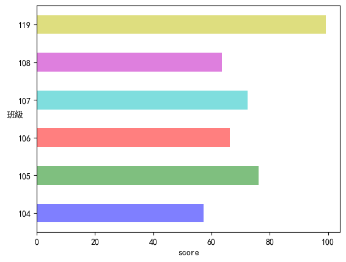
Figure 45: task6
任務 7: 求 119 班各題平均得分，以 pie chart 顯示。如下圖:
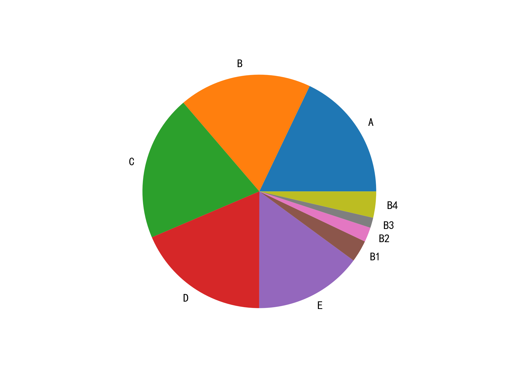
Figure 46: task7
任務 8: 求所有受試者第 B 及 B1 兩題的 scatter plot 以及 regression line。如下圖:
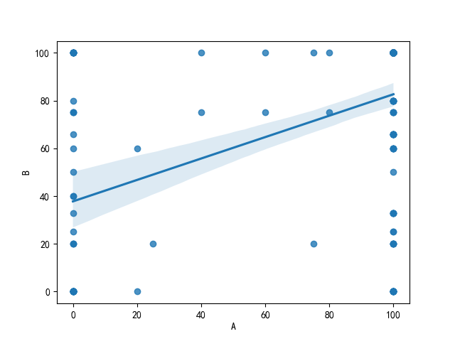
Figure 47: task8
5 網路資料解析與爬蟲
5.1 網路資料分析的兩種類型
- 可直接下載的靜態結構化資料，如 CSV、JSON、XML
- 直接分析網站的線上內容(HTML): 爬蟲(Web Crawler)
5.2 JSON
5.2.1 What is JSON?
- JSON(JavaScript Object Notation，JavaScript 物件表示法)是個以純文字來描述
資料的簡單結構，在 JSON 中可以透過特定的格式去儲存任何資料(字串,數字,陣列,物件)，
也可以透過物件或陣列來傳送較複雜的資料。37 - JSON 常用於網站上的資料呈現、傳輸 (例如將資料從伺服器送至用戶端，以利顯示網頁)。
- 一旦建立了 JSON 資料，就可以非常簡單的跟其他程式溝通或交換資料，因為 JSON 就只
是純文字格式。
5.2.2 JSON 的優點
- 相容性高
- 格式容易瞭解，閱讀及修改方便
- 支援許多資料格式 (number,string,booleans,nulls,array,associative array)
- 許多程式都支援函式庫讀取或修改 JSON 資料
- NoSQL Database
5.2.3 JSON 結構
- 物件: {}
- 陣列: []
5.2.4 JSON 支援的資料格式
- 字串 (string)，要以雙引號括起來:
- {“name”: “Mike”}
- {“name”: “Mike”}
- 數值 (number)
- {“age”: 25}
- {“age”: 25}
- 布林值 (boolean)
- {“pass”: True}
- {“pass”: True}
- 空值 (null)
- {“middlename”: null}
- {“middlename”: null}
- 物件 (object)
- 陣列 (array)
5.2.5 JSON 物件
- 格式
- key 只能是字串，也一定要加上雙引號
1: { 2: "key1": value1, 3: "key2": value2, 4: ...... 5: "keyN": valueN 6: }
- 範例 1
1: { 2: "id": 1, 3: "name": "Jamees, Yen", 4: "price": 19, 5: "gender": "M", 6: "hobby": ["music", "programming"] 7: }
- 範例 2
1: { 2: "id": 382192 3: "name": "Jamees, Yen", 4: "price": 19, 5: "gender": "M", 6: "exams": [ 7: { "title": "期中考", 8: "chinese": 85, 9: "math": 98, 10: "englihs": 92 11: }, 12: { "title": "期末考", 13: "chinese": 81, 14: "math": 92, 15: "englihs": 97 16: } 17: ], 18: "hobby": ["music", "programming"] 19: }
5.2.6 實作 1: 國際主要國家貨幣每月匯率概況
下載 JSON
1: import requests 2: 3: json_url = 'https://quality.data.gov.tw/dq_download_json.php?nid=11339&md5_url=f2fdbc21603c55b11aead08c84184b8f' 4: response = requests.get(json_url) 5: 6: jsonRes = response.json() 7: print(type(jsonRes)) 8: print(jsonRes[:3]) 9: print('日期', ":", '美元／新台幣') 10: for item in jsonRes: 11: print(item['日期'], ":", item['美元／新台幣'])
1: <class 'list'> 2: [ 3: {'日期': '2020/2/3', 4: '美元／新台幣': '30.332', 5: '人民幣／新台幣': '4.321461', 6: '歐元／美元': '1.1077', 7: '美元／日幣': '108.535', 8: '英鎊／美元': '1.3147', 9: '澳幣／美元': '0.6695', 10: '美元／港幣': '7.7685', 11: '美元／人民幣': '7.0189', 12: '美元／南非幣': '14.9376', 13: '紐幣／美元': '0.64675'}, 14: {'日期': '2020/2/4', 15: '美元／新台幣': '30.207', 16: '人民幣／新台幣': '4.320537', 17: '歐元／美元': '1.1056', 18: '美元／日幣': '108.945', 19: '英鎊／美元': '1.29605', 20: '澳幣／美元': '0.67185', 21: '美元／港幣': '7.76895', 22: '美元／人民幣': '6.9915', 23: '美元／南非幣': '14.8117', 24: '紐幣／美元': '0.6466'}, 25: {'日期': '2020/2/5', 26: '美元／新台幣': '30.152', 27: '人民幣／新台幣': '4.306248', 28: '歐元／美元': '1.1044', 29: '美元／日幣': '109.345', 30: '英鎊／美元': '1.3046', 31: '澳幣／美元': '0.6741', 32: '美元／港幣': '7.7644', 33: '美元／人民幣': '7.0019', 34: '美元／南非幣': '14.8205', 35: '紐幣／美元': '0.6484'} 36: ] 37: ============================== 38: 日期 : 美元／新台幣 39: 2020/2/3 : 30.332 40: 2020/2/4 : 30.207 41: 2020/2/5 : 30.152 42: 2020/2/6 : 30.082 43: 2020/2/7 : 30.126 44: 2020/2/10 : 30.102 45: 2020/2/11 : 30.068 46: 2020/2/12 : 30.032 47: 2020/2/13 : 30.037 48: 2020/2/14 : 30.051 49: 2020/2/17 : 30.056 50: 2020/2/18 : 30.125 51: 2020/2/19 : 30.152 52: 2020/2/20 : 30.254 53: 2020/2/21 : 30.403 54: 2020/2/24 : 30.472 55: 2020/2/25 : 30.402 56: 2020/2/26 : 30.383 57: 2020/2/27 : 30.33 58: 2020/3/2 : 30.124 59: 2020/3/3 : 30.087 60: 2020/3/4 : 30.038 61: 2020/3/5 : 29.96 62: 2020/3/6 : 30.04 63: 2020/3/9 : 30.13 64: 2020/3/10 : 30.036 65: 2020/3/11 : 30.095 66: 2020/3/12 : 30.15 67: 2020/3/13 : 30.21 68: 2020/3/16 : 30.22 69: 2020/3/17 : 30.25 70: 2020/3/18 : 30.276 71: 2020/3/19 : 30.506 72: 2020/3/20 : 30.302 73: 2020/3/23 : 30.405 74: 2020/3/24 : 30.316 75: 2020/3/25 : 30.325 76: 2020/3/26 : 30.306
資料視覺化
1: import requests 2: 3: json_url = 'https://quality.data.gov.tw/dq_download_json.php?nid=11339&md5_url=f2fdbc21603c55b11aead08c84184b8f' 4: response = requests.get(json_url) 5: jsonRes = response.json() 6: 7: dates = [i['日期'] for i in jsonRes] 8: NTUS = [float(i['美元／新台幣']) for i in jsonRes] 9: 10: import matplotlib.pyplot as plt 11: 12: plt.clf() 13: plt.plot(dates, NTUS) 14: plt.xticks(rotation=60, fontsize=6) 15: plt.savefig('images/jsonLine.png', dpi=300)
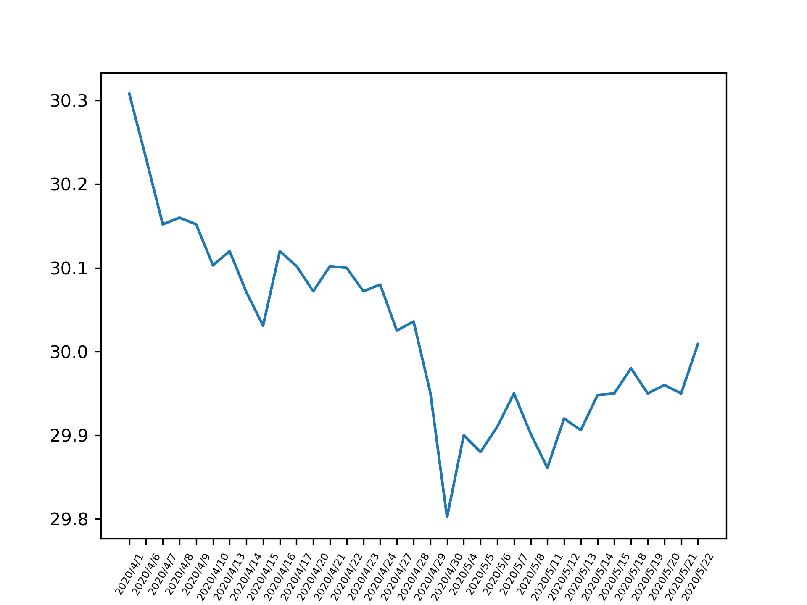
Figure 48: 匯率
5.2.7 實作 2: 澎湖生活博物館每月參觀人次統計資料
1: #coding:utf-8 2: import requests 3: import pandas as pd 4: from datetime import datetime 5: 6: json_url = 'http://opendataap2.penghu.gov.tw/resource/files/2020-01-12/eaa641fc3af66277e60b13201ca11232.json' 7: 8: response = requests.get(json_url) 9: jsonRes = response.json() 10: 11: year = [str(int(i['年度'])+1911) for i in jsonRes] 12: month = [i['月份'] for i in jsonRes] 13: visitor = [int(i['人數']) for i in jsonRes] 14: 15: dates = [x+'/'+y for x, y in zip(year, month)] 16: 17: from datetime import datetime 18: #date_object = datetime.strptime(date_str, '%m-%d-%Y').date() 19: 20: #df['time'] = [pd.to_datetime(i, format='%y%m', errors='ignore') for i in df['date']] 21: dates = datetime.strptime(dates, '%Y-%m').date() 22: 23: import matplotlib.pyplot as plt 24: 25: plt.rcParams['font.family'] = 'cwTeXFangSong' 26: plt.clf() 27: plt.bar(dates, visitor) 28: plt.xticks(rotation=60, fontsize=6) 29: plt.ylabel('人數') 30: plt.xlabel('日期') 31: plt.title('澎湖生活博物館每月參觀人次') 32: plt.savefig('images/jsonBar.png', dpi=300, bbox_inches='tight')
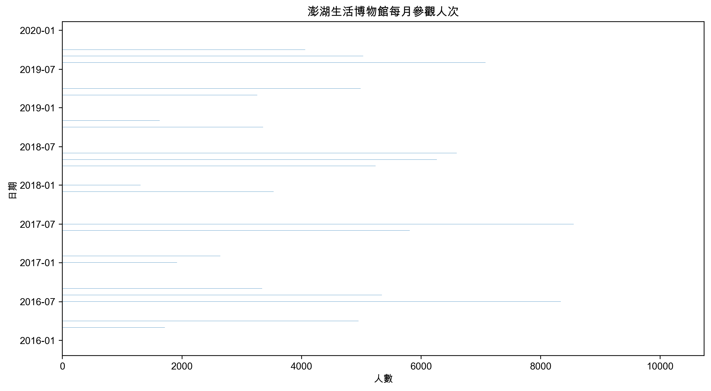
Figure 49: 參觀人數
5.2.8 實作 3: 學校甄選公告#1
1: import requests 2: import json 3: json_url = 'http://www.kh.edu.tw/json/bulletin/employ/datagrid?page=1&rows=20' 4: response = requests.get(json_url) 5: 6: print(response) 7: # 方法1 8: jsonRes1 = response.json() 9: print("========\n", type(jsonRes1)) 10: # 11: jsonRes2 = json.loads(response.text) 12: print("========\n", type(jsonRes2)) 13: 14: print("========\n", jsonRes2)
<Response [200]>
========
<class 'dict'>
========
<class 'dict'>
========
{'total'. 20, 'rows': [
{'author': '楠梓國中',
'attributes': {'subjects': '音樂專長-豎笛',
'url': 'https://employ.kh.edu.tw/Html/2020/5/楠梓區 108 學年度楠梓國中第 9 號第 1 次公告簡章.html',
'target': '_blank' },
'title': '108 學年度楠梓國中第 9 號第 1 次公告',
'pubDate': '109-05-22'},
{'author': '燕巢國中',
'attributes': {'subjects':
'資訊科技科(電腦科)',
'url': 'https://employ.kh.edu.tw/Html/2020/5/燕巢區 108 學年度燕巢國中第 14 號第 10 次公告簡章.html',
'target': '_blank'},
'title': '108 學年度燕巢國中第 14 號第 10 次公告',
'pubDate': '109-05-22'},
{'author': '仁武特殊教育學校',
'attributes': {'subjects': '學前教育階段不分類巡迴輔導班',
'url':'https://employ.kh.edu.tw/Html/2020/5/仁武區 108 學年度仁武特殊教育學校第 7 號第 5 次公告簡章.html',
'target': '_blank'},
'title': '108 學年度仁武特殊教育學校第 7 號第 5 次公告',
'pubDate': '109-05-12'},
{'author': '大社國小',
'attributes': {'subjects': '',
'url': 'https://employ.kh.edu.tw/Html/2020/5/大社區 108 學年度大社國小第 7 號第 3 次公告簡章.html',
'target': '_blank'},
'title': '108 學年度大社國小第 7 號第 3 次公告',
'pubDate': '109-05-11'},
{'author': '明誠高中',
'attributes': {'subjects': '',
'url': 'https://employ.kh.edu.tw/Html/2020/5/鼓山區 108 學年度明誠高中第 3 號第 3 次公告第 1 次修正簡章.html',
'target':'_blank'},
'title': '108 學年度明誠高中第 3 號第 3 次公告第 1 次修正',
'pubDate': '109-05-04'},
{'author': '鼓山高中',
'attributes': {'subjects': '',
'url': 'https://employ.kh.edu.tw/Html/2020/5/鼓山區 108 學年度鼓山高中第 11 號第 3 次公告簡章.html',
'target': '_blank'},
'title': '108 學年度鼓山高中第 11 號第 3 次公告',
'pubDate': '109-05-04'},
{'author': '南成國小',
'attributes': {'subjects': '兼任特教代課教師',
'url': 'https://employ.kh.edu.tw/Html/2020/5/鳳山區 108 學年度南成國小第 3 號第 3 次公告簡章.html',
'target': '_blank'},
'title': '108 學年度南成國小第 3 號第 3 次公告',
'pubDate': '109-05-01'},
{'author': '青山國小',
'attributes': {'subjects': '',
'url':'https://employ.kh.edu.tw/Html/2020/4/小港區 108 學年度青山國小第 8 號第 1 次公告簡章.html',
'target': '_blank'},
'title': '108 學年度青山國小第 8 號第 1 次公告',
'pubDate': '109-04-30'},
{'author': '明宗國小',
'attributes': {'subjects':'',
'url': 'https://employ.kh.edu.tw/Html/2020/4/湖內區 108 學年度明宗國小第 5 號第 1 次公告簡章.html',
'target': '_blank'}, 'title': '108 學年度明宗國小第 5 號第 1 次公告',
'pubDate': '109-04-30'},
{'author': '大社國中',
'attributes':{'subjects': '國文',
'url': 'https://employ.kh.edu.tw/Html/2020/4/大社區 108 學年度大社國中第 5 號第 3 次公告簡章.html',
'target': '_blank'},
'title': '108 學年度大社國中第 5 號第 3 次公告',
'pubDate': '109-04-29'},
{'author': '小港國小',
'attributes': {'subjects': '健康與體適能科',
'url':'https://employ.kh.edu.tw/Html/2020/4/小港區 108 學年度小港國小第 15 號第 3 次公告簡章.html',
'target': '_blank'},
'title': '108 學年度小港國小第 15 號第 3 次公告',
'pubDate': '109-04-21'},
{'author': '小港國小',
'attributes': {'subjects':'一般智能資賦優異資源班',
'url': 'https://employ.kh.edu.tw/Html/2020/4/小港區 108 學年度小港國小第 13 號第 2 次公告簡章.html',
'target': '_blank'},
'title':'108 學年度小港國小第 13 號第 2 次公告',
'pubDate': '109-04-18'}, {'author': '鼓山國小',
'attributes': {'subjects': '普通科',
'url':'https://employ.kh.edu.tw/Html/2020/4/旗山區 108 學年度鼓山國小第 6 號第 3 次公告簡章.html',
'target': '_blank'}, 'title': '108 學年度鼓山國小第 6 號第 3 次公告',
'pubDate': '109-04-16'},
{'author': '新民國小',
'attributes': {'subjects':'普通科代理(須代導師)',
'url': 'https://employ.kh.edu.tw/Html/2020/4/左營區 108 學年度新民國小第 9 號第 3 次公告簡章.html',
'target': '_blank'},
'title': '108 學年度新民國小第 9 號第 3 次公告',
'pubDate': '109-04-14'},
{'author': '林園高中',
'attributes': {'subjects': '表演藝術',
'url':'https://employ.kh.edu.tw/Html/2020/4/林園區 108 學年度林園高中第 18 號第 3 次公告簡章.html',
'target': '_blank'},
'title': '108 學年度林園高中第 18 號第 3 次公告',
'pubDate': '109-04-14'},
{'author': '大社國中',
'attributes': {'subjects':'集中式特教班代理',
'url': 'https://employ.kh.edu.tw/Html/2020/4/大社區 108 學年度大社國中第 4 號第 3 次公告簡章.html',
'target': '_blank'},
'title': '108 學年度大社國中第 4 號第 3 次公告',
'pubDate': '109-04-13'},
{'author': '巴楠花部落中小學',
'attributes': {'subjects': '',
'url':'https://employ.kh.edu.tw/Html/2020/4/杉林區 108 學年度巴楠花部落中小學第 13 號第 8 次公告簡章.html',
'target': '_blank'},
'title': '108 學年度巴楠花部落中小學第 13 號第 8 次公告',
'pubDate': '109-04-13'},
{'author': '橫山國小',
'attributes': {'subjects': '特殊教育（身心障礙類）不分類巡迴輔導班',
'url':'https://employ.kh.edu.tw/Html/2020/4/燕巢區 108 學年度橫山國小第 7 號第 3 次公告簡章.html',
'target': '_blank'},
'title': '108 學年度橫山國小第 7 號第 3 次公告',
'pubDate': '109-04-10'},
{'author': '林園高中',
'attributes': {'subjects':'',
'url': 'https://employ.kh.edu.tw/Html/2020/4/林園區 108 學年度林園高中第 20 號第 1 次公告簡章.html',
'target': '_blank'},
'title': '108 學年度林園高中第 20 號第 1 次公告',
'pubDate': '109-04-10'},
{'author': '鼓山高中',
'attributes': {'subjects': '',
'url': 'https://employ.kh.edu.tw/Html/2020/4/鼓山區 108 學年度鼓山高中第 12 號第 1 次公告簡章.html',
'target': '_blank'},
'title': '108 學年度鼓山高中第 12 號第 1 次公告',
'pubDate': '109-04-09'}
]
}
5.2.9 實作 4: 學校甄選公告
1: import requests 2: import json 3: 4: response = requests.get('http://www.kh.edu.tw/json/bulletin/employ/datagrid?page=1&rows=20') 5: jsonRes = response.json() 6: #print(jsonRes['rows']) 7: for item in jsonRes['rows']: 8: print(item['author'], ":", item['title'],"/", item['pubDate']) 9: # sortJR = jsonRes['rows'] 10: # print(type(sortJR)) 11: # 12: #sortJR.sort(key=lambda x: x['author'], reverse=False) 13: #for item in sortJR: 14: # print(item['author'], ":", item['title'],"/", item['pubDate'])
明誠高中 : 109學年度明誠高中第1號第1次公告 / 109-06-01 八卦國小 : 109學年度八卦國小第1號第1次公告 / 109-06-01 新莊國小 : 109學年度新莊國小第1號第1次公告 / 109-06-01 楠梓國中 : 108學年度楠梓國中第9號第3次公告 / 109-06-02 燕巢國中 : 108學年度燕巢國中第14號第11次公告 / 109-05-29 前鎮國中 : 108學年度前鎮國中第10號第1次公告 / 109-05-25 仁武特殊教育學校 : 108學年度仁武特殊教育學校第7號第5次公告 / 109-05-12 大社國小 : 108學年度大社國小第7號第3次公告 / 109-05-11 明誠高中 : 108學年度明誠高中第3號第3次公告第1次修正 / 109-05-04 鼓山高中 : 108學年度鼓山高中第11號第3次公告 / 109-05-04 南成國小 : 108學年度南成國小第3號第3次公告 / 109-05-01 青山國小 : 108學年度青山國小第8號第1次公告 / 109-04-30 明宗國小 : 108學年度明宗國小第5號第1次公告 / 109-04-30 大社國中 : 108學年度大社國中第5號第3次公告 / 109-04-29 小港國小 : 108學年度小港國小第15號第3次公告 / 109-04-21 小港國小 : 108學年度小港國小第13號第2次公告 / 109-04-18 鼓山國小 : 108學年度鼓山國小第6號第3次公告 / 109-04-16 新民國小 : 108學年度新民國小第9號第3次公告 / 109-04-14 林園高中 : 108學年度林園高中第18號第3次公告 / 109-04-14 大社國中 : 108學年度大社國中第4號第3次公告 / 109-04-13
5.3 網路爬蟲
5.3.1 HTML
What is HTML
- 政府資料開放平台
- 超文本標記語言（HyperText Markup Language）是一種用於建立網頁的標準標記語言。HTML 是一種基礎技術，常與 CSS、JavaScript 一起被眾多網站用於設計網頁、網頁應用程式以及行動應用程式的使用者介面。38
- HTML 元素是構建網站的基石。HTML 允許嵌入圖像與物件，並且可以用於建立互動式表單，它被用來結構化資訊——例如標題、段落和列表等等，也可用來在一定程度上描述文件的外觀和語意。38
- HTML 的語言形式為<>包圍的 HTML 元素（如<html>），瀏覽器使用 HTML 標籤和指
令碼來詮釋網頁內容，但不會將它們顯示在頁面上。 38 - 網頁就是由各式標籤 (tag) 所組成的階層式文件。
HTML 範例
- HTML code
1: <html> 2: <head> 3: <title>我是網頁標題</title> 4: <style> 5: .large { 6: color:blue; 7: text-align: center; 8: } 9: </style> 10: </head> 11: <body> 12: <h1 class="large">我是變色且置中的抬頭</h1> 13: <p id="p1">我是段落一</p> 14: <p id="p2" style="">我是段落二</p> 15: <div><a href='http://blog.castman.net' style="font-size:200%;">我是放大的超連結</a></div> 16: </body> 17: </html>
- RESULTS
我是變色且置中的抬頭
我是段落一
我是段落二
- HTML tree
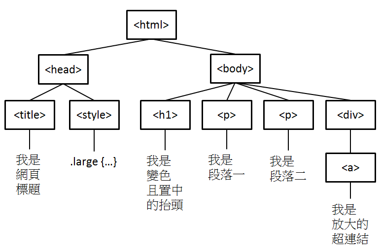
Figure 50: HTML tree
- HTML 文件內不同的標籤 (例如 <title>, <h1>, <p>, <a>
- 不同的標籤有著不同的語義，表示建構網頁用的不同元件，且標籤可以有各種屬性 (例如 id, class, style 等通用屬性, 或 href 等專屬屬性)，
- 因此我們可以用標籤 + 屬性去定位資料所在的區塊並取得資料。39
爬蟲精神：將程式模仿成一般 user
- 原則
- 要抓網路資料，就要先仔細觀察網頁內容
- 要儘量欺騙網站自己是 browser
- 要抓網路資料，就要先仔細觀察網頁內容
- 實作範例: 取得 HTML 資料
- 第一版
1: # 抓取PTT電影版header 2: import urllib.request as req 3: url = "https://www.ptt.cc/bbs/Stock/index.html" 4: 5: with req.urlopen(url) as response: 6: data = response.read().decode("utf-8") 7: print(data)
urllib.error.HTTPError: HTTP Error 403: Forbidden
- 被拒絕原因：這隻程式的行為不像一般使用者，被網站伺服器拒絕。403 Forbidden 是 HTTP 協議中的一個 HTTP 狀態碼（Status Code）。可以簡單的理解為沒有權限訪問此站，服務器收到請求但拒絕提供服務40。
- urllib.request 是一個用來從 URLs (Uniform Resource Locators)取得資料的 Python 模
組。它提供一個了非常簡單的介面能接受多種不同的協議(protocol, 如 http, ftp)， urlopen 函數。
- 被拒絕原因：這隻程式的行為不像一般使用者，被網站伺服器拒絕。403 Forbidden 是 HTTP 協議中的一個 HTTP 狀態碼（Status Code）。可以簡單的理解為沒有權限訪問此站，服務器收到請求但拒絕提供服務40。
- 第二版:加入 headers
import urllib.request as req url = "https://www.ptt.cc/bbs/Stock/index.html" # 幫request加上一個header request = req.Request(url, headers = { "User-Agent":"Mozilla/5.0 (Macintosh; Intel Mac OS X 10.14; rv:72.0) Gecko/20100101 Firefox/72.0" }) with req.urlopen(request) as response: data = response.read().decode("utf-8") print('所取得的資料型態：',type(data)) print(data[700:1200])
所取得的資料型態： <class ’str’>
api.js’></script></head>
<body>
<div id=“topbar-container”>
<div id=“topbar” class=“bbs-content”>
<a id=“logo” href=“bbs”>批踢踢實業坊</a>
<span>›</span>
<a class=“board” href=“/bbs/Stock/index.html”><span class=“board-label”>看板 </span>Stock</a>
<a class=“right small” href=“/about.html”>關於我們</a>
<a class=“right small” href=“/contact.html”>聯絡資訊</a>
</div>
</div>
<div id=“main-container”>
<div id=“action-bar-container”>
<div class=“action-bar”>
<div class=“btn-group bt
- 第一版
5.3.2 BeautifulSoup
BeautifulSoup4 簡介
- BeautifulSoup4 和 lxml 一樣，Beautiful Soup 也是一個 HTML/XML 的解析器，
- 主要的功能也是如何解析和提取 HTML/XML 資料。
實作：解析 HTML 資料內容
- 安裝解析 HTML 所需套件(安裝套件名稱後面有 4)
pip install beautifulsoup4
| Requirement | already | satisfied: | beautifulsoup4 | in | /Users/letranger/anaconda3/lib/python3.7/site-packages | (4.8.0) | | | | Requirement | already | satisfied: | soupsieve>=1.2 | in | /Users/letranger/anaconda3/lib/python3.7/site-packages | (from | beautifulsoup4) | (1.9.4) |
- 第三版: 解析 HTML
1: import urllib.request as req 2: url = "https://www.ptt.cc/bbs/Stock/index.html" 3: # 幫request加上一個header 4: request = req.Request(url, headers = { 5: "User-Agent":"Mozilla/5.0 (Macintosh; Intel Mac OS X 10.14; rv:72.0) Gecko/20100101 Firefox/72.0" 6: }) 7: 8: with req.urlopen(request) as response: 9: data = response.read().decode("utf-8") 10: 11: import bs4 12: root = bs4.BeautifulSoup(data,"html.parser") 13: #print(root) 14: print(type(root)) 15: #print(root.prettify()) 16: print(type(root.prettify())) 17: ##print(root.prettify()[:300])
<class 'bs4.BeautifulSoup'> <class 'str'>
Beautifulsoup 解析器
BeautifulSoup4 四大物件
BeautifulSoup4 將複雜 HTML 文件轉換成一個複雜的樹形結構,每個節點都是 Python 物件,所有物件可以歸納為 4 種:
- Tag: HTML 中的一個個標籤，例如：<title>, <head>, <div>, <link>, <a>…，Tag 下
擁有許多屬性和方法，和前端類似，例如 a 標籤一定會有它的 href 屬性，某些屬性是某
些標籤所獨有的。 - NavigableString: 標籤內部的文字: .string
- BeautifulSoup: BeautifulSoup 物件就是通過解析網頁所得到的物件，我們的 soup 即
是 BeautifulSoup 物件. 可以把它當作 Tag 物件，是一個特殊的 Tag，我們可以分別獲取它的型別，名稱，以及屬性 - Comment: 物件是網頁中的註釋及特殊字串，當你提取網頁中的註釋的時候，它會自動幫你生成 Comment 物件
Tag 物件:
- Tag 物件可以說 BeautifulSoup 中最為重要的物件，通過 BeautifulSoup 來提取資料基本都圍繞著這個物件來進行操作。
- 一個節點中是可以包含多個子節點和多個字串的。例如 html 節點中包含著 head 和 body 節點。
所以 BeautifulSoup 就可以將一個 HTML 的網頁用這樣一層層巢狀的節點來進行表示。 - name: 每一個 tag 標籤都有 name 屬性
- attributes: 在 html 中,某個 Tag 可能有多個屬性, Tag 屬性使用和字典一樣的方法取值:
- get_text(): 通過 get_text() 方法我們可以獲取某個 Tag 下所有的文字內容：
- find_all(): 在前面我們講了通過標籤的屬性來進行標籤的訪問的方法，大多都只適用於
簡單的一些場景，所以 BeautifulSoup 還提供了搜尋整個文件樹的方法，即 find_all()。
該方法基本適用於任何節點
第四版：擷取所需資訊
1: import urllib.request as req 2: url = "https://www.ptt.cc/bbs/Kaohsiung/index.html" 3: # 幫request加上一個header 4: request = req.Request(url, headers = { 5: "User-Agent":"Mozilla/5.0 (Macintosh; Intel Mac OS X 10.14; rv:72.0) Gecko/20100101 Firefox/72.0" 6: }) 7: 8: with req.urlopen(request) as response: 9: data = response.read().decode("utf-8") 10: 11: import bs4 12: root = bs4.BeautifulSoup(data,"html.parser") 13: 14: titles = root.find_all("div", class_="title") 15: 16: for t in titles: 17: print(t.a) 18:
<a href="/bbs/Kaohsiung/M.1591426133.A.8A9.html">[閒聊] 新興區雨暫停了！</a> <a href="/bbs/Kaohsiung/M.1591426899.A.142.html">[閒聊] 通通給我出去投</a> <a href="/bbs/Kaohsiung/M.1544812880.A.AEE.html">[公告] 高雄板板規+違規檢舉區 (2018/06/11)</a> <a href="/bbs/Kaohsiung/M.1544813221.A.C34.html">[公告] 置底買賣專區</a> <a href="/bbs/Kaohsiung/M.1591246810.A.667.html">[公告] 20.06.06 0:00 禁止宣傳贊成/反對罷免資訊</a> <a href="/bbs/Kaohsiung/M.1591396114.A.CBC.html">[公告] 投票路程聊天區(禁止拉票)</a> <a href="/bbs/Kaohsiung/M.1591314761.A.E1C.html">[閒聊] 0605-0607 天氣提醒(1300 陣雨)</a>
5.4 實作練習
- 由高雄市政府資料開放平台找到[高雄市各級學校甄選公告]，線上讀取其線上 JSON 資料，輸
出校名及出缺科別。 - 由政府資料開放平台找到高雄市電動機車充電站名稱及充電站地址，線上讀取 JSON 檔，列
出所有高雄市機車充電站之[計費方式]以及[充電站所在位址]。 - Google 美食達人「壽司羊」，以爬蟲程
式列出其部落格(在痞客邦)最近五篇文章
的標題以及文章月份。
- 參考解答
- 參考解答
Jun 【高雄食記】初一車輪燒紅豆餅／只要 25 元就可以吃到一大塊的巧克力戚風蛋糕做成的雙重巧克力車輪餅，會牽絲的起司蛋也很好吃((附菜單 Jun 【高雄美食】長代堂食品行／好吃的長崎蜂蜜蛋糕，底下那一層才是配上無糖紅茶的隱藏版超級美味甜點，千萬不要丟掉了！！！ Jun 【冷凍宅配】蝦大俠室內有機養殖 白蝦 草蝦／不出門簡單煮，在家就可以吃到美味的蝦子，不管是烤蝦，水煮蝦都很方便快速。 Jun 【台北美食】地中海牛排館 歐華酒店／超高 CP 值的用餐優惠方案，濕式熟成 50 天肋眼牛排+1000 元送高級雙人房住宿一晚((附菜單 Jun 【高雄食記】玖雞炸物／堅持使用新鮮雞肉，每天到鳳農市場採購，吃得到雞肉鮮味鹽酥雞小店，墨魚黑輪也很好吃，脫油機不油膩((附菜單
6 Python to web
6.1 Flask
1: from flask import Flask 2: app = Flask(__name__) 3: 4: @app.route("/") 5: def hello(): 6: title = "<title>Advanced Materials of Python</title>" 7: h1 = "<h1>Python based web</h1>" 8: p1 = "<p>Hello python</p>" 9: return title+h1+p1 10: 11: if __name__ == "__main__": 12: app.run()
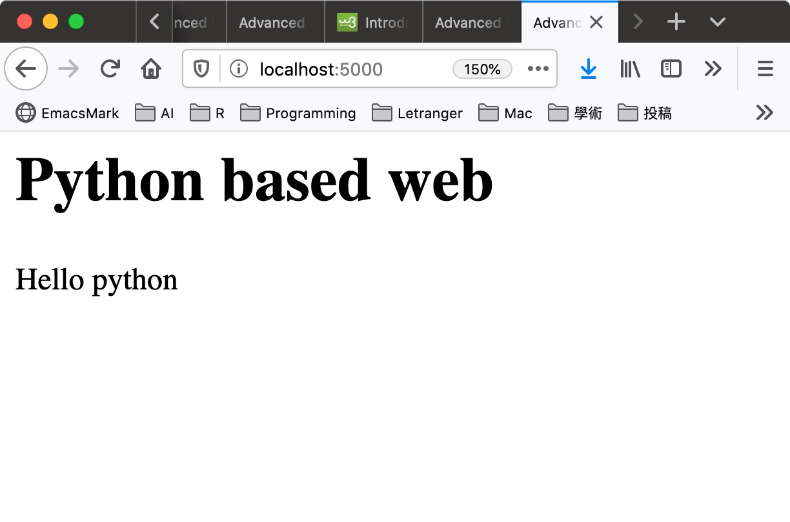
Figure 52: Flask Web Site